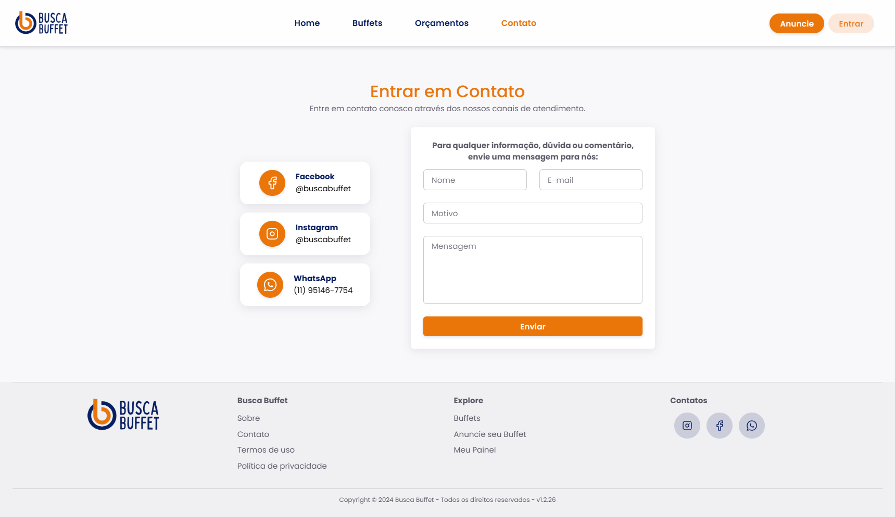
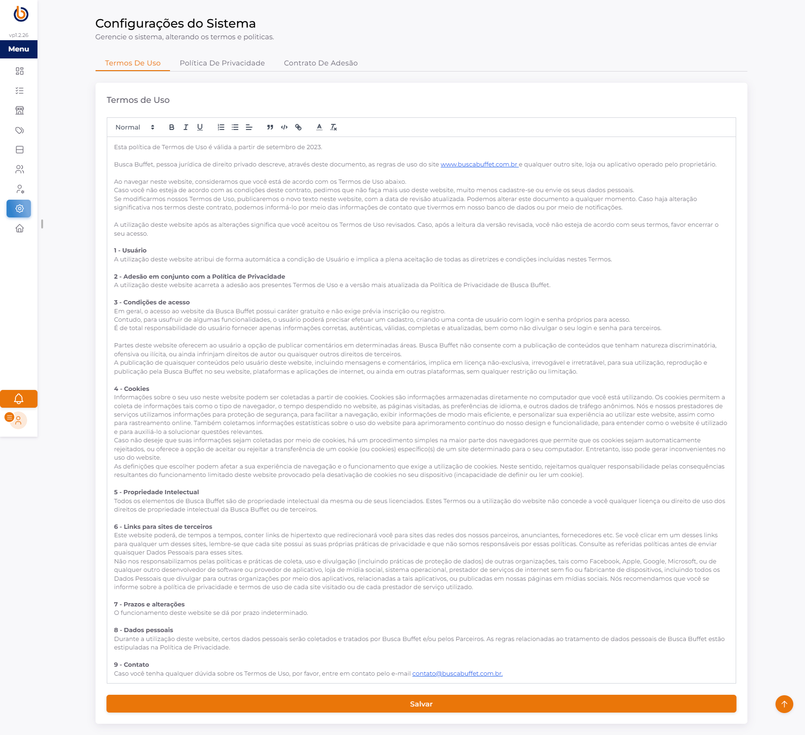

Sobre
A documentação do sistema buscabuffet.com.br descreve as funcionalidades principais da plataforma voltada à conexão entre buffets e clientes.
Banco de Dados
A estrutura do banco de dados do sistema Busca Buffet foi cuidadosamente projetada para garantir a integridade e a eficiência das informações. Abaixo, detalhamos as principais tabelas, seus campos e os relacionamentos entre elas.
Tabelas do Banco de Dados
Aqui estão as descrições de cada tabela, organizadas de forma intuitiva:
**`perfils`**
| Campo | Tipo | Descrição |
|---|---|---|
| `id` | `INTEGER` | Chave primária auto-incrementável. |
| `nome` | `STRING` | Nome do perfil de usuário (ex: Admin, Cliente, Buffet). |
**`categorias`**
| Campo | Tipo | Descrição |
|---|---|---|
| `id` | `INTEGER` | Chave primária auto-incrementável. |
| `nome` | `STRING` | Nome da categoria (ex: Aniversário, Casamento). |
| `descricao` | `STRING` | Descrição detalhada da categoria (opcional). |
**`estados`**
| Campo | Tipo | Descrição |
|---|---|---|
| `id` | `INTEGER` | Chave primária auto-incrementável. |
| `cod` | `STRING` | Código do estado (ex: IBGE). |
| `nome` | `STRING` | Nome completo do estado. |
| `sigla` | `STRING` | Sigla do estado (ex: SP, RJ). |
**`cidades`**
| Campo | Tipo | Descrição |
|---|---|---|
| `id` | `INTEGER` | Chave primária auto-incrementável. |
| `cod` | `STRING` | Código da cidade (ex: IBGE). |
| `nome` | `STRING` | Nome da cidade. |
| `id_estado` | `INTEGER` | Chave estrangeira, referência `estados.id`. Relacionamento: N:1. |
**`entidades`**
| Campo | Tipo | Descrição |
|---|---|---|
| `id` | `INTEGER` | Chave primária auto-incrementável. |
| `nome` | `STRING` | Nome da entidade (Buffet, Cliente). |
| `documento` | `STRING` | Documento da entidade (CPF/CNPJ) (opcional). |
| `aceitou_termo` | `STRING` | Indica se a entidade aceitou os termos de uso (`0` ou `1`). |
| `destacado` | `STRING` | Indica se a entidade está em destaque (`0` ou `1`). |
**`usuarios`**
| Campo | Tipo | Descrição |
|---|---|---|
| `id` | `INTEGER` | Chave primária auto-incrementável. |
| `email` | `STRING` | Endereço de e-mail do usuário (único). |
| `password` | `STRING` | Senha do usuário (hash). |
| `remember_me_token` | `STRING` | Token para "lembrar-me" (opcional). |
| `google_token` | `STRING` | Token de autenticação do Google (opcional). |
| `token_recovery` | `STRING` | Token para recuperação de senha (opcional). |
| `id_perfil` | `INTEGER` | Chave estrangeira, referência `perfils.id`. Relacionamento: N:1. |
| `id_entidade` | `INTEGER` | Chave estrangeira, referência `entidades.id`. Relacionamento: N:1. |
**`contatos`**
| Campo | Tipo | Descrição |
|---|---|---|
| `id` | `INTEGER` | Chave primária auto-incrementável. |
| `descricao` | `STRING` | Valor do contato (telefone, e-mail, etc.). |
| `tipo` | `STRING` | Tipo de contato (ex: "telefone", "email"). |
| `id_entidade` | `INTEGER` | Chave estrangeira, referência `entidades.id`. Relacionamento: N:1. |
**`enderecos`**
| Campo | Tipo | Descrição |
|---|---|---|
| `id` | `INTEGER` | Chave primária auto-incrementável. |
| `cep` | `STRING` | Código de Endereçamento Postal. |
| `bairro` | `STRING` | Nome do bairro. |
| `complemento` | `STRING` | Complemento do endereço (opcional). |
| `rua` | `STRING` | Nome da rua/logradouro. |
| `numero` | `STRING` | Número do endereço. |
| `id_cidade` | `INTEGER` | Chave estrangeira, referência `cidades.id`. Relacionamento: N:1. |
**`endereco_entidades`**
| Campo | Tipo | Descrição |
|---|---|---|
| `id` | `INTEGER` | Chave primária auto-incrementável. |
| `tipo` | `STRING` | Tipo de endereço (ex: "comercial", "residencial"). |
| `email` | `STRING` | E-mail associado a este endereço (opcional). |
| `telefone` | `STRING` | Telefone associado a este endereço (opcional). |
| `id_endereco` | `INTEGER` | Chave estrangeira, referência `enderecos.id`. Relacionamento: N:1. |
| `id_entidade` | `INTEGER` | Chave estrangeira, referência `entidades.id`. Relacionamento: N:1. |
**`planos`**
| Campo | Tipo | Descrição |
|---|---|---|
| `id` | `INTEGER` | Chave primária auto-incrementável. |
| `nome` | `STRING` | Nome do plano (ex: Básico, Premium). |
| `valor_mensal` | `DOUBLE` | Valor mensal do plano. |
| `valor_anual` | `DOUBLE` | Valor anual do plano. |
**`plano_funcionalidades`**
| Campo | Tipo | Descrição |
|---|---|---|
| `id` | `INTEGER` | Chave primária auto-incrementável. |
| `descricao` | `STRING` | Descrição da funcionalidade do plano. |
| `id_plano` | `INTEGER` | Chave estrangeira, referência `planos.id`. Relacionamento: N:1. |
**`arquivos`**
| Campo | Tipo | Descrição |
|---|---|---|
| `id` | `INTEGER` | Chave primária auto-incrementável. |
| `nome` | `STRING` | Nome do arquivo (opcional). |
| `path` | `TEXT` | Caminho ou URL do arquivo. |
**`assinaturas`**
| Campo | Tipo | Descrição |
|---|---|---|
| `id` | `INTEGER` | Chave primária auto-incrementável. |
| `tipo` | `STRING` | Tipo de assinatura (ex: "mensal", "anual"). |
| `id_plano` | `INTEGER` | Chave estrangeira, referência `planos.id`. Relacionamento: N:1. |
| `id_entidade` | `INTEGER` | Chave estrangeira, referência `entidades.id`. Relacionamento: N:1. |
| `valor` | `DOUBLE` | Valor da assinatura. |
| `desconto` | `DOUBLE` | Valor do desconto aplicado (padrão: 0). |
| `created_at` | `TIMESTAMP` | Data e hora de criação do registro. |
| `updated_at` | `TIMESTAMP` | Data e hora da última atualização do registro. |
**`eventos`**
| Campo | Tipo | Descrição |
|---|---|---|
| `id` | `INTEGER` | Chave primária auto-incrementável. |
| `nome` | `STRING` | Nome do evento. |
| `qtd_pessoas` | `INTEGER` | Quantidade de pessoas esperadas para o evento. |
| `data_do_evento` | `TIMESTAMP` | Data e hora do evento. |
| `tipo` | `STRING` | Tipo do evento (ex: "aniversario", "casamento"). |
| `observacoes` | `STRING` | Observações adicionais sobre o evento (opcional). |
| `status` | `STRING` | Status atual do evento (ex: "pendente", "confirmado"). |
| `id_entidade` | `INTEGER` | Chave estrangeira, referência `entidades.id`. Relacionamento: N:1. |
| `created_at` | `TIMESTAMP` | Data e hora de criação do registro. |
| `updated_at` | `TIMESTAMP` | Data e hora da última atualização do registro. |
**`propostas`**
| Campo | Tipo | Descrição |
|---|---|---|
| `id` | `INTEGER` | Chave primária auto-incrementável. |
| `status` | `STRING` | Status da proposta (ex: "enviada", "aceita", "recusada"). |
| `valor` | `DOUBLE` | Valor da proposta (opcional). |
| `data_disponibilidade` | `TIMESTAMP` | Data de disponibilidade para o evento (opcional). |
| `observacoes` | `STRING` | Observações adicionais da proposta (opcional). |
| `id_entidade` | `INTEGER` | Chave estrangeira, referência `entidades.id`. Relacionamento: N:1. |
| `id_evento` | `INTEGER` | Chave estrangeira, referência `eventos.id`. Relacionamento: N:1. |
| `id_arquivo` | `INTEGER` | Chave estrangeira, referência `arquivos.id` (para anexar propostas, opcional). Relacionamento: N:1. |
| `created_at` | `TIMESTAMP` | Data e hora de criação do registro. |
| `updated_at` | `TIMESTAMP` | Data e hora da última atualização do registro. |
**`atracoes`**
| Campo | Tipo | Descrição |
|---|---|---|
| `id` | `INTEGER` | Chave primária auto-incrementável. |
| `nome` | `STRING` | Nome da atração (ex: Banda, DJ, Mágico). |
**`servicos`**
| Campo | Tipo | Descrição |
|---|---|---|
| `id` | `INTEGER` | Chave primária auto-incrementável. |
| `nome` | `STRING` | Nome do serviço (ex: Fotografia, Decoração, Catering). |
**`buffets`**
| Campo | Tipo | Descrição |
|---|---|---|
| `id` | `INTEGER` | Chave primária auto-incrementável. |
| `slug` | `STRING` | Slug para URL amigável do buffet. |
| `capacidade_total` | `INTEGER` | Capacidade máxima de pessoas do buffet (opcional). |
| `area_total` | `DOUBLE` | Área total do buffet em metros quadrados (opcional). |
| `horario_atendimento` | `STRING` | Horário de atendimento durante a semana (opcional). |
| `horario_atendimento_fds` | `STRING` | Horário de atendimento nos finais de semana (opcional). |
| `sobre` | `TEXT` | Descrição detalhada sobre o buffet (opcional). |
| `id_entidade` | `INTEGER` | Chave estrangeira, referência `entidades.id`. Relacionamento: N:1. |
**`buffet_galerias`**
| Campo | Tipo | Descrição |
|---|---|---|
| `id` | `INTEGER` | Chave primária auto-incrementável. |
| `id_buffet` | `INTEGER` | Chave estrangeira, referência `buffets.id`. Relacionamento: N:1. |
| `id_arquivo` | `INTEGER` | Chave estrangeira, referência `arquivos.id`. Relacionamento: N:1. |
**`buffet_detalhes`**
| Campo | Tipo | Descrição |
|---|---|---|
| `id` | `INTEGER` | Chave primária auto-incrementável. |
| `id_buffet` | `INTEGER` | Chave estrangeira, referência `buffets.id`. Relacionamento: N:1. |
| `id_atracao` | `INTEGER` | Chave estrangeira, referência `atracoes.id` (opcional). Relacionamento: N:1. |
| `id_servico` | `INTEGER` | Chave estrangeira, referência `servicos.id` (opcional). Relacionamento: N:1. |
**`cupons`**
| Campo | Tipo | Descrição |
|---|---|---|
| `id` | `INTEGER` | Chave primária auto-incrementável. |
| `codigo` | `STRING` | Código único do cupom. |
| `descricao` | `STRING` | Descrição do cupom (opcional). |
| `valor` | `STRING` | Valor do desconto (pode ser fixo ou percentual). |
| `porcentagem` | `STRING` | Indica se o valor é percentual (`0` para fixo, `1` para percentual). |
| `data_inicio` | `TIMESTAMP` | Data e hora de início da validade do cupom. |
| `data_fim` | `TIMESTAMP` | Data e hora de fim da validade do cupom. |
**`cupon_utilizados`**
| Campo | Tipo | Descrição |
|---|---|---|
| `id` | `INTEGER` | Chave primária auto-incrementável. |
| `valor` | `DOUBLE` | Valor do cupom utilizado. |
| `id_cupon` | `INTEGER` | Chave estrangeira, referência `cupons.id`. Relacionamento: N:1. |
| `id_entidade` | `INTEGER` | Chave estrangeira, referência `entidades.id`. Relacionamento: N:1. |
| `created_at` | `TIMESTAMP` | Data e hora de utilização do cupom. |
**`api_tokens`**
| Campo | Tipo | Descrição |
|---|---|---|
| `id` | `INTEGER` | Chave primária auto-incrementável. |
| `user_id` | `INTEGER` | Chave estrangeira, referência `usuarios.id`. Relacionamento: N:1. |
| `name` | `STRING` | Nome do token. |
| `type` | `STRING` | Tipo do token (ex: "auth"). |
| `token` | `STRING` | Valor do token (único). |
| `expires_at` | `TIMESTAMP` | Data e hora de expiração do token (opcional). |
| `created_at` | `TIMESTAMP` | Data e hora de criação do token. |
APIs
Esta seção detalha os endpoints da API utilizados pelo sistema, cobrindo operações relacionadas a usuários, buffets, cupons, planos, e funcionalidades. Para a maioria dos endpoints, é necessário um token de autenticação Bearer, obtido após o login do usuário.
Autenticação
Para acessar a maioria dos endpoints, um token Bearer deve ser incluído no cabeçalho da
requisição, no formato Authorization: Bearer [USER_TOKEN]. O USER_TOKEN é armazenado
no localStorage após o login bem-sucedido.
Formato das Respostas
Todas as respostas da API, salvo exceções específicas, são retornadas em formato JSON. Em caso de erro, a
resposta geralmente incluirá um objeto error contendo detalhes sobre o problema.
Endpoints de Usuários
- URL: `${API_URL_BUSCABUFFET}/usuarios`
- Método: `POST`
- Autenticação: Necessária (Bearer Token)
- Corpo da Requisição (JSON):
- `nome`: string (nome do usuário)
- `email`: string (email do usuário)
- `password`: string (senha do usuário)
- Resposta de Sucesso (200 OK): Dados do usuário criado.
- Resposta de Erro: Objeto `error` com detalhes.
- URL: `${API_URL_BUSCABUFFET}/enderecos/{id}`
- Método: `GET`
- Autenticação: Necessária (Bearer Token)
- Parâmetros de URL:
- `id`: number (ID do buffet)
- Resposta de Sucesso (200 OK): Dados do endereço.
- Resposta de Erro: Objeto `error` com detalhes.
- URL: `${API_V2_URL_BUSCABUFFET}/usuarios/{id_user}`
- Método: `PUT`
- Autenticação: Necessária (Bearer Token)
- Parâmetros de URL:
- `id_user`: number (ID do usuário a ser deletado)
- Corpo da Requisição (JSON):
- `tipo`: string (novo tipo do usuário, ex: 'deletado')
- Resposta de Sucesso (200 OK): Resposta da operação.
- Resposta de Erro: Erro da requisição.
- URL: `${API_V2_URL_BUSCABUFFET}/usuarios/restore/{id_user}`
- Método: `PUT`
- Autenticação: Necessária (Bearer Token)
- Parâmetros de URL:
- `id_user`: number (ID do usuário a ser restaurado)
- Corpo da Requisição (JSON):
- `tipo`: string (novo tipo do usuário após restauração)
- Resposta de Sucesso (200 OK): Resposta da operação.
- Resposta de Erro: Erro da requisição.
- URL: `https://consulta-cnpj-gratis.p.rapidapi.com/companies/{documento}`
- Método: `GET`
- Autenticação: Necessária (Headers `x-rapidapi-host` e `x-rapidapi-key`)
- Parâmetros de URL:
- `documento`: string (CNPJ a ser validado)
- Resposta de Sucesso (200 OK): Dados do CNPJ.
- Resposta de Erro: Objeto `error` com detalhes.
- URL: `${API_URL_BUSCABUFFET}/usuarios/validate`
- Método: `POST`
- Autenticação: Necessária (Bearer Token)
- Corpo da Requisição (JSON):
- `nome`: string
- `email`: string
- `password`: string
- `documento`: string
- Resposta de Sucesso (200 OK): Dados validados.
- Resposta de Erro: Objeto `error` com detalhes.
- URL: `${API_URL_BUSCABUFFET}/usuarios/login`
- Método: `POST`
- Autenticação: Nenhuma (Este endpoint retorna o token)
- Corpo da Requisição (JSON):
- `email`: string (email do usuário)
- `password`: string (senha do usuário)
- Resposta de Sucesso (200 OK): Token e dados do usuário.
- Resposta de Erro: Erro da requisição.
- URL: `${API_URL_BUSCABUFFET}/usuarios/reset`
- Método: `POST`
- Autenticação: Nenhuma (ou pode ser necessária dependendo da lógica do token de reset)
- Corpo da Requisição (JSON):
- `email`: string (email do usuário)
- `token`: string (token de reset de senha)
- `password`: string (nova senha)
- Resposta de Sucesso (200 OK): Resposta da operação.
- Resposta de Erro: Objeto `error` com detalhes.
- URL: `${API_URL_BUSCABUFFET}/usuarios/{userId}`
- Método: `GET`
- Autenticação: Necessária (Bearer Token)
- Parâmetros de URL:
- `userId`: number (ID do usuário)
- Resposta de Sucesso (200 OK): Dados do usuário.
- Resposta de Erro: Erro da requisição.
- URL: `${API_URL_BUSCABUFFET}/usuarios/{userId}`
- Método: `PUT`
- Autenticação: Necessária (Bearer Token)
- Parâmetros de URL:
- `userId`: number (ID do usuário a ser editado)
- Corpo da Requisição (JSON): Objeto com os campos do usuário a serem atualizados (ex: `nome`, `email`, `password`).
- Resposta de Sucesso (200 OK): Dados atualizados do usuário.
- Resposta de Erro: Erro da requisição.
- URL: `${API_V2_URL_BUSCABUFFET}/usuarios`
- Método: `GET`
- Autenticação: Necessária (Bearer Token)
- Resposta de Sucesso (200 OK): Lista de usuários.
- Resposta de Erro: Erro da requisição.
- URL: `${API_V2_URL_BUSCABUFFET}/usuariosAdmin`
- Método: `GET`
- Autenticação: Necessária (Bearer Token)
- Resposta de Sucesso (200 OK): Lista de usuários administradores.
- Resposta de Erro: Erro da requisição.
- URL: `${API_URL_BUSCABUFFET}/notifications/email/admin`
- Método: `POST`
- Autenticação: Não explícita no código fornecido para este método, mas provavelmente requer token.
- Corpo da Requisição (JSON):
- `titulo`: string (título da notificação)
- `descricao`: string (descrição da notificação)
- Resposta de Sucesso (200 OK): Confirmação do envio.
- Resposta de Erro: Erro da requisição.
`POST /usuarios`
Cria um novo usuário no sistema.
`GET /enderecos/{id}`
Retorna o endereço de um buffet específico pelo seu ID.
`PUT /usuarios/{id_user}` (V2)
Deleta (soft delete) um usuário, alterando seu tipo.
`PUT /usuarios/restore/{id_user}` (V2)
Restaura um usuário "deletado" (soft delete).
`GET /companies/{documento}` (Validação CNPJ)
Valida um CNPJ utilizando uma API externa (RapidAPI).
`POST /usuarios/validate`
Valida os dados de um novo usuário, incluindo nome, email, senha e documento.
`POST /usuarios/login`
Realiza o login de um usuário e retorna o token de autenticação.
`POST /usuarios/reset`
Reseta a senha de um usuário utilizando email e token de reset.
`GET /usuarios/{userId}`
Obtém os dados de um usuário específico pelo seu ID.
`PUT /usuarios/{userId}`
Edita os dados de um usuário existente.
`GET /usuarios` (V2)
Retorna uma lista de usuários (geralmente para uso interno/administrador).
`GET /usuariosAdmin` (V2)
Retorna uma lista de usuários para uso específico por administradores.
`POST /notifications/email/admin`
Envia notificações por email para administradores.
Endpoints de Buffets
- URL: `${API_URL_BUSCABUFFET}/buffets`
- Método: `GET`
- Autenticação: Nenhuma (utiliza HTTP.request que pode ou não ter autenticação implícita, mas o exemplo não mostra)
- Resposta de Sucesso (200 OK): Array de objetos buffet filtrados e ordenados.
- Resposta de Erro: Erro da requisição.
- URL: `${API_URL_BUSCABUFFET}/buffets/buffet/{buffetId}`
- Método: `GET`
- Autenticação: Necessária (Bearer Token)
- Parâmetros de URL:
- `buffetId`: number (ID do buffet)
- Resposta de Sucesso (200 OK): Dados do buffet.
- Resposta de Erro: Erro da requisição.
- URL: `${API_URL_BUSCABUFFET}/buffets/{buffetId}`
- Método: `GET`
- Autenticação: Necessária (Bearer Token)
- Parâmetros de URL:
- `buffetId`: number (ID da entidade buffet)
- Resposta de Sucesso (200 OK): Dados da entidade buffet.
- Resposta de Erro: Erro da requisição.
- URL: `${API_URL_BUSCABUFFET}/buffets/slug/{slug}`
- Método: `GET`
- Autenticação: Necessária (Bearer Token)
- Parâmetros de URL:
- `slug`: string (slug do buffet)
- Resposta de Sucesso (200 OK): Dados do buffet.
- Resposta de Erro: Erro da requisição.
- URL: `${API_URL_BUSCABUFFET}/buffets?q={search}`
- Método: `GET`
- Autenticação: Necessária (Bearer Token)
- Parâmetros de Query:
- `q`: string (termo de busca)
- Resposta de Sucesso (200 OK): Array de objetos buffet filtrados e ordenados.
- Resposta de Erro: Erro da requisição.
- URL: `${API_URL_BUSCABUFFET}/buffets/detalhes/{buffetId}`
- Método: `GET`
- Autenticação: Necessária (Bearer Token)
- Parâmetros de URL:
- `buffetId`: number (ID do buffet)
- Resposta de Sucesso (200 OK): Detalhes do buffet.
- Resposta de Erro: Erro da requisição.
- URL: `${API_V2_URL_BUSCABUFFET}/buffets`
- Método: `POST`
- Autenticação: Não é exigido Bearer Token no código, mas o envio de notificação sugere privilégios.
- Corpo da Requisição (JSON):
- `id_entidade`: number (ID da entidade associada)
- `slug`: string (slug amigável)
- `capacidade_total`: number
- `area_total`: string
- `horario_atendimento`: string
- `horario_atendimento_fds`: string
- `sobre`: string (descrição)
- `youtube`: string (link do YouTube)
- `status`: string (status do buffet)
- `documento`: string (opcional, documento relacionado)
- `redes_sociais`: array de objetos `{ descricao: string, tipo: string }`
- Resposta de Sucesso (200 OK): Dados do buffet criado.
- Resposta de Erro: Erro da requisição.
- URL: `${API_V2_URL_BUSCABUFFET}/buffets/{id}`
- Método: `PUT`
- Autenticação: Necessária (Bearer Token)
- Parâmetros de URL:
- `id`: number (ID do buffet a ser editado)
- Corpo da Requisição (JSON): Objeto com os campos do buffet a serem atualizados.
- Resposta de Sucesso (200 OK): Dados atualizados do buffet.
- Resposta de Erro: Erro da requisição.
- URL: `${API_URL_BUSCABUFFET}/buffets/detalhes/{id}`
- Método: `PUT`
- Autenticação: Necessária (Bearer Token)
- Parâmetros de URL:
- `id`: number (ID do buffet)
- Corpo da Requisição (JSON): Dados das atrações e serviços.
- Resposta de Sucesso (200 OK): Dados atualizados.
- Resposta de Erro: Erro da requisição.
- URL: `${API_V2_URL_BUSCABUFFET}/buffets/detalhes`
- Método: `POST`
- Autenticação: Necessária (Bearer Token)
- Corpo da Requisição (JSON): Dados das atrações e serviços.
- Resposta de Sucesso (200 OK): Dados adicionados.
- Resposta de Erro: Erro da requisição.
- URL: `${API_URL_BUSCABUFFET}/buffets/{id_buffet}/detalhes`
- Método: `DELETE`
- Autenticação: Necessária (Bearer Token)
- Parâmetros de URL:
- `id_buffet`: number (ID do buffet)
- Resposta de Sucesso (200 OK): Confirmação da exclusão.
- Resposta de Erro: Erro da requisição.
- URL: `${API_V2_URL_BUSCABUFFET}/enderecos/{idBuffet}`
- Método: `POST`
- Autenticação: Necessária (Bearer Token)
- Parâmetros de URL:
- `idBuffet`: number (ID do buffet)
- Corpo da Requisição (JSON): Dados do endereço (ex: `rua`, `numero`, `cep`, `cidade`, `estado`).
- Resposta de Sucesso (200 OK): Dados do endereço criado.
- Resposta de Erro: Erro da requisição.
- URL: `${API_V2_URL_BUSCABUFFET}/enderecos/{idBuffet}`
- Método: `PUT`
- Autenticação: Necessária (Bearer Token)
- Parâmetros de URL:
- `idBuffet`: number (ID do buffet)
- Corpo da Requisição (JSON): Dados do endereço a serem atualizados.
- Resposta de Sucesso (200 OK): Dados atualizados do endereço.
- Resposta de Erro: Erro da requisição.
`GET /buffets`
Retorna uma lista de todos os buffets, com ordenação por destaque e plano, e filtragem por status de assinatura e endereço.
`GET /buffets/buffet/{buffetId}`
Retorna os dados de um buffet específico pelo seu ID.
`GET /buffets/{buffetId}`
Retorna os dados de uma entidade buffet pelo seu ID (possivelmente dados mais gerais da entidade).
`GET /buffets/slug/{slug}`
Retorna os dados de um buffet específico pelo seu slug (nome amigável na URL).
`GET /buffets?q={search}`
Retorna buffets filtrados por termo de busca, com a mesma ordenação por destaque e plano.
`GET /buffets/detalhes/{buffetId}`
Retorna os detalhes de um buffet (atrações, serviços, etc.) pelo seu ID.
`POST /buffets` (V2)
Cria um novo registro de buffet no sistema.
`PUT /buffets/{id}` (V2)
Edita os dados de um buffet existente pelo seu ID.
`PUT /buffets/detalhes/{id}`
Edita as atrações e serviços de um buffet.
`POST /buffets/detalhes` (V2)
Adiciona atrações e serviços a um buffet.
`DELETE /buffets/{id_buffet}/detalhes`
Deleta as atrações e serviços associados a um buffet.
`POST /enderecos/{idBuffet}` (V2)
Cria um endereço para um buffet específico.
`PUT /enderecos/{idBuffet}` (V2)
Edita o endereço de um buffet específico.
Endpoints de Dados Gerais (Serviços, Atrações, Endereços, etc.)
- URL: `${API_URL_BUSCABUFFET}/servicos/{id}`
- Método: `GET`
- Autenticação: Necessária (Bearer Token)
- Parâmetros de URL:
- `id`: number (ID do buffet)
- Resposta de Sucesso (200 OK): Lista de serviços.
- Resposta de Erro: Erro da requisição.
- URL: `${API_URL_BUSCABUFFET}/segurancas/{id}`
- Método: `GET`
- Autenticação: Necessária (Bearer Token)
- Parâmetros de URL:
- `id`: number (ID do buffet)
- Resposta de Sucesso (200 OK): Lista de itens de segurança.
- Resposta de Erro: Erro da requisição.
- URL: `${API_URL_BUSCABUFFET}/atracoes/{id}`
- Método: `GET`
- Autenticação: Necessária (Bearer Token)
- Parâmetros de URL:
- `id`: number (ID do buffet)
- Resposta de Sucesso (200 OK): Lista de atrações.
- Resposta de Erro: Erro da requisição.
- URL: `${API_URL_BUSCABUFFET}/categorias/entidade/{id}`
- Método: `GET`
- Autenticação: Necessária (Bearer Token)
- Parâmetros de URL:
- `id`: number (ID da entidade)
- Resposta de Sucesso (200 OK): Lista de categorias.
- Resposta de Erro: Erro da requisição.
- URL: `${API_URL_BUSCABUFFET}/categorias/entidade/{id_buffet}`
- Método: `DELETE`
- Autenticação: Necessária (Bearer Token)
- Parâmetros de URL:
- `id_buffet`: number (ID do buffet)
- Resposta de Sucesso (200 OK): Confirmação da exclusão.
- Resposta de Erro: Erro da requisição.
- URL: `${API_URL_BUSCABUFFET}/arquivos/{id_file}`
- Método: `DELETE`
- Autenticação: Necessária (Bearer Token)
- Parâmetros de URL:
- `id_file`: number (ID do arquivo a ser deletado)
- Resposta de Sucesso (200 OK): Confirmação da exclusão.
- Resposta de Erro: Erro da requisição.
- URL: `${API_URL_BUSCABUFFET}/enderecos/estados/{idState}/cidades`
- Método: `GET`
- Autenticação: Necessária (Bearer Token)
- Parâmetros de URL:
- `idState`: number (ID do estado)
- Resposta de Sucesso (200 OK): Lista de cidades.
- Resposta de Erro: Erro da requisição.
- URL: `${API_V2_URL_BUSCABUFFET}/enderecos/cidades/estados/{idState}`
- Método: `GET`
- Autenticação: Necessária (Bearer Token)
- Parâmetros de URL:
- `idState`: number (ID do estado)
- Resposta de Sucesso (200 OK): Lista de cidades.
- Resposta de Erro: Erro da requisição.
- URL: `${API_URL_BUSCABUFFET}/enderecos/estados`
- Método: `GET`
- Autenticação: Necessária (Bearer Token)
- Resposta de Sucesso (200 OK): Lista de estados.
- Resposta de Erro: Erro da requisição.
- URL: `${API_V2_URL_BUSCABUFFET}/estados-filtro`
- Método: `GET`
- Autenticação: Necessária (Bearer Token)
- Resposta de Sucesso (200 OK): Lista de estados para filtro.
- Resposta de Erro: Erro da requisição.
- URL: `${API_URL_BUSCABUFFET}/atracoes`
- Método: `GET`
- Autenticação: Necessária (Bearer Token)
- Resposta de Sucesso (200 OK): Lista de atrações.
- Resposta de Erro: Erro da requisição.
- URL: `${API_URL_BUSCABUFFET}/servicos`
- Método: `GET`
- Autenticação: Necessária (Bearer Token)
- Resposta de Sucesso (200 OK): Lista de serviços.
- Resposta de Erro: Erro da requisição.
- URL: `${API_URL_BUSCABUFFET}/segurancas`
- Método: `GET`
- Autenticação: Necessária (Bearer Token)
- Resposta de Sucesso (200 OK): Lista de itens de segurança.
- Resposta de Erro: Erro da requisição.
`GET /servicos/{id}`
Retorna os serviços associados a um buffet pelo seu ID.
`GET /segurancas/{id}`
Retorna os itens de segurança associados a um buffet pelo seu ID.
`GET /atracoes/{id}`
Retorna as atrações associadas a um buffet pelo seu ID.
`GET /categorias/entidade/{id}`
Retorna as categorias associadas a uma entidade (buffet) pelo seu ID.
`DELETE /categorias/entidade/{id_buffet}`
Deleta as categorias associadas a um buffet.
`DELETE /arquivos/{id_file}`
Deleta um arquivo pelo seu ID.
`GET /enderecos/estados/{idState}/cidades`
Retorna uma lista de cidades dado o ID de um estado.
`GET /enderecos/cidades/estados/{idState}` (V2)
Retorna uma lista de cidades dado o ID de um estado (versão 2).
`GET /enderecos/estados`
Retorna uma lista de todos os estados cadastrados no banco de dados.
`GET /estados-filtro` (V2)
Retorna uma lista de estados para filtros de buffets.
`GET /atracoes`
Retorna todas as atrações cadastradas no sistema.
`GET /servicos`
Retorna todos os serviços cadastrados no sistema.
`GET /segurancas`
Retorna todos os itens de segurança cadastrados no sistema.
Endpoints de Cupons
- URL: `${API_URL_BUSCABUFFET}/cupons`
- Método: `GET`
- Autenticação: Necessária (Bearer Token)
- Resposta de Sucesso (200 OK): Lista de cupons.
- Resposta de Erro: Erro da requisição.
- URL: `${API_URL_BUSCABUFFET}/cupons`
- Método: `POST`
- Autenticação: Necessária (Bearer Token)
- Content-Type: `multipart/form-data` (apesar de receber JSON, o código indica multipart)
- Corpo da Requisição: Dados do cupom (conforme interface `addCupom`).
- Resposta de Sucesso (200 OK): Dados do cupom adicionado.
- Resposta de Erro: Erro da requisição.
- URL: `${API_URL_BUSCABUFFET}/cupons/{index}`
- Método: `PUT`
- Autenticação: Necessária (Bearer Token)
- Content-Type: `multipart/form-data` (apesar de receber JSON, o código indica multipart)
- Parâmetros de URL:
- `index`: number (ID do cupom a ser editado)
- Corpo da Requisição: Dados do cupom (conforme interface `addCupom`).
- Resposta de Sucesso (200 OK): Dados atualizados do cupom.
- Resposta de Erro: Erro da requisição.
- URL: `${API_URL_BUSCABUFFET}/cupons/{id}`
- Método: `DELETE`
- Autenticação: Necessária (Bearer Token)
- Parâmetros de URL:
- `id`: number (ID do cupom a ser deletado)
- Resposta de Sucesso (200 OK): Confirmação da exclusão.
- Resposta de Erro: Erro da requisição.
- URL: `${API_URL_BUSCABUFFET}/cupons/utilizar/{id_cupom}/{id_entidade}`
- Método: `POST`
- Autenticação: Necessária (Bearer Token)
- Parâmetros de URL:
- `id_cupom`: number (ID do cupom)
- `id_entidade`: number (ID da entidade que está utilizando o cupom)
- Corpo da Requisição (JSON):
- `codigo`: string (código do cupom)
- Resposta de Sucesso (200 OK): Confirmação do uso do cupom.
- Resposta de Erro: Erro da requisição.
`GET /cupons`
Retorna uma lista de todos os cupons cadastrados.
`POST /cupons`
Adiciona um novo cupom.
`PUT /cupons/{index}`
Edita um cupom existente pelo seu ID.
`DELETE /cupons/{id}`
Deleta um cupom pelo seu ID.
`POST /cupons/utilizar/{id_cupom}/{id_entidade}`
Utiliza um cupom para uma entidade específica.
Endpoints de Planos
- URL: `${API_URL_BUSCABUFFET}/planos`
- Método: `GET`
- Autenticação: Nenhuma (utiliza HTTP.request)
- Resposta de Sucesso (200 OK): Lista de planos.
- Resposta de Erro: Erro da requisição.
- URL: `${API_URL_BUSCABUFFET}/planos/`
- Método: `POST`
- Autenticação: Necessária (Bearer Token)
- Content-Type: `multipart/form-data` (apesar de receber JSON, o código indica multipart)
- Corpo da Requisição: Dados do plano (conforme interface `addPlan`).
- Resposta de Sucesso (200 OK): Dados do plano adicionado.
- Resposta de Erro: Erro da requisição.
- URL: `${API_URL_BUSCABUFFET}/planos/{index}`
- Método: `PUT`
- Autenticação: Necessária (Bearer Token)
- Parâmetros de URL:
- `index`: number (ID do plano a ser editado)
- Corpo da Requisição: Dados do plano (conforme interface `addPlan`).
- Resposta de Sucesso (200 OK): Dados atualizados do plano.
- Resposta de Erro: Erro da requisição.
- URL: `${API_URL_BUSCABUFFET}/planos/funcionalidades`
- Método: `POST`
- Autenticação: Nenhuma (utiliza HTTP.request, mas provavelmente exige token)
- Corpo da Requisição: Dados da funcionalidade (conforme interface `addFunctionalities`).
- Resposta de Sucesso (200 OK): Dados da funcionalidade criada.
- Resposta de Erro: Erro da requisição.
`GET /planos`
Retorna uma lista de todos os planos de assinatura.
`POST /planos/`
Adiciona um novo plano.
`PUT /planos/{index}`
Edita um plano existente pelo seu ID.
`POST /planos/funcionalidades`
Cria uma nova funcionalidade para um plano.
Endpoints de Eventos
- URL: `${API_URL_BUSCABUFFET}/eventos/{id}`
- Método: `PUT`
- Autenticação: Necessária (Bearer Token)
- Parâmetros de URL:
- `id`: number (ID do evento a ser editado)
- Corpo da Requisição (JSON): Dados do evento a serem atualizados.
- Resposta de Sucesso (200 OK): Dados atualizados do evento.
- Resposta de Erro: Erro da requisição.
`PUT /eventos/{id}`
Edita um evento existente pelo seu ID.
Endpoints de Assinaturas
- URL: `${API_URL_BUSCABUFFET}/assinaturas`
- Método: `GET`
- Autenticação: Necessária (Bearer Token)
- Resposta de Sucesso (200 OK): Lista de assinaturas.
- Resposta de Erro: Erro da requisição.
- URL: `${API_URL_BUSCABUFFET}/assinaturas/{id}`
- Método: `GET`
- Autenticação: Necessária (Bearer Token)
- Parâmetros de URL:
- `id`: number (ID da assinatura)
- Resposta de Sucesso (200 OK): Dados da assinatura.
- Resposta de Erro: Erro da requisição.
`GET /assinaturas`
Retorna uma lista de todas as assinaturas registradas.
`GET /assinaturas/{id}`
Retorna os detalhes de uma assinatura específica pelo seu ID.
Home
A página Home é a porta de entrada do sistema Busca Buffet. Ela tem como objetivo principal apresentar aos usuários uma visão geral dos buffets disponíveis e permitir que eles encontrem rapidamente o que procuram através da funcionalidade de busca.
Funcionalidades
- Listagem de Buffets: A página exibe uma lista de buffets cadastrados na plataforma.
- Busca por Nome: Usuários podem pesquisar buffets utilizando o campo de busca. A busca é realizada pelo nome da entidade (nome do buffet).
Dados Exibidos
Para cada buffet listado na página Home, as seguintes informações são carregadas e apresentadas ao usuário:
- Informações do Buffet (`Buffet_1.default`):
- `slug`: Para a construção de URLs amigáveis.
- `capacidade_total` (opcional): Capacidade de pessoas que o buffet pode acomodar.
- `area_total` (opcional): Área total do espaço.
- `horario_atendimento` (opcional): Horário de funcionamento durante a semana.
- `horario_atendimento_fds` (opcional): Horário de funcionamento nos finais de semana.
- `sobre` (opcional): Uma breve descrição sobre o buffet.
- Dados da Entidade (`entidade`):
- `nome`: O nome principal do buffet/entidade.
- `documento` (opcional): CPF/CNPJ da entidade.
- `aceitou_termo`: Indica se a entidade aceitou os termos de uso.
- `destacado`: Indica se o buffet está em destaque na plataforma.
- Contatos (`contatos`): Lista de contatos da entidade (telefone, e-mail, etc.).
- Redes Sociais (`redesSociais`): Lista de redes sociais da entidade.
- Assinaturas (`assinaturas`): Informações sobre a assinatura do buffet na plataforma.
- Plano (`plano`): Detalhes do plano de assinatura (nome, valor mensal/anual).
- Endereços (`enderecos`): Detalhes do endereço do buffet.
- Endereço (`endereco`): Informações como CEP, bairro, rua, número, complemento.
- Cidade (`cidade`): Nome e código da cidade.
- Estado (`estado`): Nome, sigla e código do estado.
- Cidade (`cidade`): Nome e código da cidade.
- Endereço (`endereco`): Informações como CEP, bairro, rua, número, complemento.
- Galeria de Imagens (`galerias`): Imagens associadas ao buffet para exibição.
- Arquivo (`arquivo`): Caminho (`path`) e nome do arquivo da imagem.
- Categorias do Buffet (`categorias`): Categorias às quais o buffet pertence (ex: Casamento,
Aniversário, Eventos Corporativos).
- Categoria (`categoria`): Nome e descrição da categoria.
Funcionamento da Requisição
Quando a página é carregada ou uma busca é realizada, a API faz uma requisição para obter os dados dos buffets.
- Se um parâmetro de consulta
qfor fornecido na URL (ex:?q=nome do buffet), a listagem será filtrada para incluir apenas buffets cujo nome da entidade contenha o termo da busca. - A resposta da requisição é um objeto JSON contendo os dados dos buffets.
Buffet
A página Buffet é dedicada à exibição detalhada dos espaços e serviços oferecidos pelos estabelecimentos parceiros do Busca Buffet. Ela permite que os usuários explorem as características de cada buffet individualmente, facilitando a decisão na escolha do local ideal para seus eventos.
Propósito e Interação
- Exploração Detalhada: Esta seção permite aos visitantes aprofundar-se nas especificidades de cada buffet.
- Listagem Filtrada: Similar à Home, a página Buffet também pode apresentar uma lista de buffets, mas geralmente com um foco maior em filtros e categorias, ou ser o resultado de uma navegação mais aprofundada.
Informações Apresentadas
Para cada estabelecimento listado ou exibido individualmente na página Buffet, o sistema carrega um conjunto abrangente de dados para enriquecer a experiência do usuário:
- Dados Fundamentais do Buffet (
Buffet_1.default):slug: Utilizado para construir URLs exclusivas e amigáveis para cada perfil de buffet.capacidade_total(opcional): Capacidade máxima de convidados que o espaço pode acomodar.area_total(opcional): Medida da área total do buffet.horario_atendimento(opcional): Horário de funcionamento regular.horario_atendimento_fds(opcional): Horário de funcionamento em fins de semana e feriados.sobre(opcional): Uma descrição completa do estabelecimento, destacando seus diferenciais e filosofia.
- Informações da Entidade Associada (
entidade):nome: O nome comercial do buffet.documento(opcional): Identificador fiscal da entidade (CPF/CNPJ).aceitou_termo: Status de aceitação dos termos e condições da plataforma.destacado: Indicação se o buffet possui um status de destaque na plataforma.- Meios de Contato (
contatos): Lista de telefones, e-mails e outros canais para comunicação direta. - Presença Digital (
redesSociais): Links para os perfis do buffet nas principais redes sociais. - Detalhes da Assinatura (
assinaturas): Informações sobre o plano de serviço contratado pelo buffet.- Plano Contratado (
plano): Nome e condições do plano de assinatura (mensal, anual, funcionalidades).
- Plano Contratado (
- Localização Completa (
enderecos): Endereço detalhado do estabelecimento.- Localização Física (
endereco): Dados como CEP, bairro, rua, número e complemento.- Município (
cidade): Nome e código da cidade onde o buffet está localizado.- Estado (
estado): Nome completo, sigla e código do estado correspondente.
- Estado (
- Município (
- Localização Física (
- Conteúdo Visual (
galerias): Imagens e mídias visuais que representam o buffet.- Arquivo de Mídia (
arquivo): O caminho (path) e nome do arquivo de cada imagem/vídeo.
- Arquivo de Mídia (
- Tipos de Eventos e Serviços (
categorias): Categorias de eventos que o buffet atende e serviços que oferece.- Categoria Específica (
categoria): Nome e descrição da categoria (ex: Casamentos, Festas Infantis, Eventos Corporativos).
- Categoria Específica (
Comportamento da Requisição
Ao acessar a página Buffet, o sistema realiza uma requisição para carregar os dados.
- Se houver um parâmetro de consulta
qna URL (ex:?q=buffet xyz), a listagem exibirá apenas buffets cujos nomes de entidade correspondam ao termo de busca. - A resposta da API é formatada em JSON, contendo todas as informações detalhadas dos buffets.
Pesquisar Buffets

A página Pesquisar Buffets permite que os usuários explorem os melhores buffets da sua região e refinem sua busca de forma prática e eficiente, garantindo maior visibilidade para todos os buffets da plataforma.
Funcionalidades
- Busca por Nome: Campo dedicado para pesquisar diretamente pelo nome do buffet.
- Filtros por Categoria: Permite refinar a busca por categorias específicas como Casamento, Aniversário, Eventos Corporativos, entre outros.
- Filtros por Localidade: Os usuários podem selecionar cidades, como São Paulo, para ver buffets na região desejada.
- Destaques em Primeiro Lugar: Buffets em destaque na plataforma aparecem no topo da listagem, seguidos pelos demais em ordem sequencial.
Objetivo da Página
Facilitar que os usuários encontrem rapidamente os buffets mais adequados para seu evento, com base em suas preferências e localização. Além disso, essa página é um canal de exposição para todos os buffets cadastrados, aumentando suas chances de serem descobertos e receberem solicitações de orçamento.
Comportamento da Busca
- Se for informado um nome no campo de busca, o sistema filtrará a listagem para exibir buffets cujo nome da entidade contenha o termo pesquisado.
- Os filtros aplicados (categoria e cidade) atuam em conjunto para refinar os resultados exibidos.
- A resposta da busca é exibida dinamicamente com base na seleção dos filtros e critérios fornecidos.
Orçamentos
A página de Orçamentos no sistema Busca Buffet é o ponto central para a solicitação e gestão de propostas entre clientes e buffets. Quando um cliente demonstra interesse em um serviço, ele pode solicitar um orçamento diretamente através desta funcionalidade. O sistema, por sua vez, processa essa solicitação e notifica o buffet responsável.
Funcionalidade Principal: Criação de Proposta
A principal ação nesta seção é a criação de uma nova proposta (orçamento), que envolve os seguintes passos:
- Validação dos Dados: Antes de criar a proposta, os dados enviados na requisição são validados para garantir sua integridade e conformidade com as regras de negócio.
- Identificação do Buffet: O sistema verifica se a entidade (`id_entidade`) associada à proposta realmente corresponde a um perfil de buffet. Caso contrário, a solicitação é recusada.
- Registro da Proposta: Uma nova proposta é registrada no banco de dados na tabela `propostas` com as informações fornecidas.
- Notificação por E-mail: Após o sucesso na criação da proposta, uma notificação é enviada por e-mail para o usuário associado ao buffet.
Informações da Proposta (Proposta_1.default)
Ao criar uma proposta, as informações essenciais que são persistidas e gerenciadas incluem:
- `id_entidade`: O ID da entidade (buffet) para a qual o orçamento é solicitado.
- Outros campos da tabela `propostas` conforme a estrutura do banco de dados (ex: `status`, `valor`, `data_disponibilidade`, `observacoes`, `id_evento`, `id_arquivo`).
Comunicação e Resposta
- Resposta da API: Se a proposta for criada com sucesso, a API retorna um status `202 Accepted` junto com os detalhes da proposta criada e as informações da entidade (buffet).
- Envio de E-mail:
- O e-mail é enviado para o endereço cadastrado do usuário associado à entidade (buffet).
- O remetente do e-mail é configurado através da variável de ambiente `EMAIL_FROM`.
- O assunto do e-mail é "Novo orçamento para você!".
- O corpo do e-mail é gerado a partir do template `emails/new-proposta-to-cliente`, utilizando o nome fornecido no payload da requisição para personalizar a mensagem.
- Tratamento de Erros: Em caso de falha na validação ou se a entidade indicada não for um buffet, a API retorna um status `400 Bad Request` com uma mensagem de erro apropriada.
Anuncie
A seção Anuncie do Busca Buffet é dedicada ao processo de cadastro de novos buffets e outros prestadores de serviço na plataforma. É aqui que os interessados em divulgar seus espaços e serviços realizam o registro, criando sua conta de usuário e as informações iniciais de sua entidade (buffet).
Funcionalidade Principal: Cadastro de Nova Entidade e Usuário
O fluxo principal nesta seção é o registro de uma nova entidade (representando o buffet) e o usuário associado a ela. Este processo envolve as seguintes etapas:
- Validação dos Dados da Entidade: Primeiramente, os dados fornecidos para a criação da
entidade são validados através do
CreateEntidadeValidator_1.default. Isso garante que informações como nome da entidade, documento (CPF/CNPJ, se aplicável) e aceitação dos termos de uso estejam corretas e completas. - Validação dos Dados do Usuário: Em seguida, as informações para a criação do usuário, como
e-mail e senha, são validadas pelo
CreateUsuarioValidator_1.default. Esta etapa assegura que o e-mail seja válido e que a senha atenda aos requisitos de segurança. - Processamento de Validação Interna: Após a validação dos payloads, um método interno
_validate(payloadEntidade, payloadUser)é acionado. Este método é responsável pela lógica de negócio para a criação efetiva da entidade e do usuário, incluindo a associação correta entre eles e a definição do perfil de usuário (provavelmente "Buffet" neste contexto).
Informações Registradas
Durante o processo de "Anuncie", as seguintes informações são coletadas e registradas:
- Para a Entidade (
entidades):- Nome do buffet/entidade.
- Documento (CPF ou CNPJ, se aplicável).
- Confirmação da aceitação dos termos de uso.
- Outras informações específicas da entidade, conforme definido no
CreateEntidadeValidator_1.default.
- Para o Usuário (
usuarios):- Endereço de e-mail (que será o login).
- Senha (armazenada de forma segura, geralmente como um hash).
- Associação ao perfil de usuário apropriado (ex: "Buffet").
- Associação à entidade recém-criada.
Comunicação e Resposta
- Resposta da API (Sucesso): Se o cadastro for concluído com êxito, a API retorna um status
200 OK. A resposta JSON conterá um objetoresult, indicando o sucesso da operação e, possivelmente, dados do usuário ou entidade criados. - Tratamento de Erros: Em caso de falha em qualquer etapa (validação de dados, erro no
processo de criação), a API retorna um status
500 Internal Server Error. A resposta JSON incluirá um objetoerrorcom detalhes sobre o problema, e o erro será registrado no console do servidor para depuração.
Sobre Nós
A página Sobre Nós apresenta informações institucionais da Busca Buffet, uma startup de tecnologia especializada em conectar clientes e empresas do setor de eventos. Nesta seção, os visitantes conhecem nossa história, missão e os diferenciais que tornam nossa plataforma um ponto de referência na busca por buffets.
Fundada com o propósito de facilitar a organização de eventos, a Busca Buffet surgiu diante da crescente demanda por soluções digitais que conectem anfitriões a buffets e fornecedores confiáveis. Reunimos em um só lugar dezenas de opções, oferecendo praticidade, agilidade e economia de tempo ao usuário.
Quem Somos
Somos uma empresa comprometida em modernizar o mercado de eventos. Utilizamos tecnologia para promover negócios, aumentar a visibilidade de buffets e garantir que quem organiza um evento tenha acesso a várias cotações com poucos cliques.
Política de Privacidade
A página Política de Privacidade apresenta informações institucionais e atualizadas sobre como os dados pessoais dos usuários são coletados, utilizados e protegidos pela plataforma Busca Buffet.
Essa página tem como objetivo garantir a transparência no tratamento das informações dos usuários que acessam, se cadastram ou interagem com o sistema. O conteúdo apresentado é gerenciado pelo administrador do sistema e pode ser alterado diretamente através do painel administrativo, permitindo atualizações conforme as necessidades da empresa ou exigências legais.
O Que Você Encontra Nesta Página
- Quais dados são coletados e por que.
- Como os dados são tratados e utilizados.
- Se e com quem os dados podem ser compartilhados.
- Direitos dos usuários em relação aos seus dados.
- Medidas de segurança adotadas para proteção das informações.
- Informações de contato para solicitações e dúvidas.
A Política de Privacidade é parte essencial do nosso compromisso com a transparência e a segurança das informações. Recomendamos que os usuários consultem regularmente esta página para se manterem atualizados quanto às práticas da plataforma.
Termos de Uso

Esta página institucional apresenta os Termos de Uso do site Busca Buffet e contém todas as regras, diretrizes e condições que regulam a utilização da plataforma pelos usuários e anunciantes.
O conteúdo exibido nesta página é gerenciado dinamicamente por meio do painel administrativo do sistema, permitindo que o administrador da plataforma possa atualizar o texto a qualquer momento, conforme mudanças jurídicas ou estratégicas.
Finalidade da Página
- Informar sobre os direitos e responsabilidades de quem acessa ou utiliza a plataforma.
- Apresentar regras de uso, acesso, cadastro e interação com os serviços oferecidos.
- Reforçar o compromisso com a privacidade e proteção de dados.
- Orientar sobre o uso de cookies, propriedade intelectual e links externos.
Ao navegar no site, consideramos que o usuário está de acordo com os termos descritos. Caso discorde de alguma condição, o indicado é que encerre seu acesso imediatamente. Mudanças importantes nesta documentação podem ser comunicadas por e-mail ou notificações, e a versão mais atualizada estará sempre disponível nesta página.
Contato
A página de Contato é um ponto crucial para a comunicação direta no sistema Busca Buffet. Ela permite que usuários e parceiros enviem mensagens, dúvidas ou solicitações, garantindo que suas interações sejam devidamente registradas e encaminhadas.
Funcionalidade Principal: Envio de Mensagens de Contato
A principal função desta seção é permitir a criação e registro de novos contatos no banco de dados. Veja como funciona:
- Validação de Dados: Antes de qualquer processamento, as informações enviadas na
requisição
são validadas usando o
CreateValidator_1.defaultpara garantir que todos os campos obrigatórios e o formato dos dados estejam corretos. - Registro do Contato: Se os dados forem válidos, um novo registro é criado na tabela
contatosdo banco de dados, persistindo as informações fornecidas pelo usuário.
Informações Registradas (Contato_1.default)
Ao enviar uma mensagem pela página de contato, as informações essenciais que são gravadas incluem:
descricao: O conteúdo da mensagem ou o valor do contato (ex: número de telefone, e-mail).tipo: O tipo de contato (ex: "email", "telefone", "mensagem_geral").id_entidade: O ID da entidade, se a mensagem estiver vinculada a um buffet ou cliente específico.- Outros campos da tabela
contatosconforme a estrutura do banco de dados.
Comunicação e Resposta
- Resposta da API (Sucesso): Se o contato for criado com sucesso, a API retorna um status
200 OKjuntamente com os dados do item de contato recém-criado. - Tratamento de Erros: Em caso de falha na validação ou outro erro durante o processo, a
API
retorna um status
500 Internal Server Error, fornecendo uma mensagem de erro detalhada para auxiliar na depuração. Erros são registrados no console do servidor.
Login
A página de **Login** é o portal de acesso para usuários cadastrados no sistema Busca Buffet, sejam eles administradores, clientes ou proprietários de buffets. Ela permite que os usuários autentiquem-se para acessar áreas restritas e funcionalidades específicas da plataforma.
Funcionalidade Principal: Autenticação de Usuário
O processo de login envolve as seguintes etapas e validações:
- Validação dos Dados de Entrada: Os campos de e-mail e senha enviados pelo usuário são
primeiramente validados usando o
LoginValidator_1.default, garantindo que estejam no formato correto. - Busca do Usuário: Com base no e-mail fornecido, o sistema tenta encontrar um usuário correspondente no banco de dados.
- Verificação de Existência do Usuário: Se nenhum usuário for encontrado com o e-mail informado, a tentativa de login é recusada.
- Validação da Senha: A senha fornecida pelo usuário é comparada com o hash da senha
armazenado no banco de dados. Esta verificação é realizada de forma segura usando
Hash_1.default.verify. - Recusa por Senha Inválida: Se a senha não corresponder, a tentativa de login é recusada.
- Geração do Token de Autenticação: Após a validação bem-sucedida do e-mail e da senha, um token de autenticação é gerado para o usuário. Este token é essencial para manter o usuário logado e autorizá-lo a acessar rotas protegidas da API. O token tem uma validade de 10 dias.
Informações Retornadas no Sucesso
Em caso de login bem-sucedido, a API retorna as seguintes informações para o cliente:
- Token de Autenticação: Um objeto JSON contendo o token de acesso e seus metadados (como tempo de expiração).
- Dados do Usuário: As informações do usuário autenticado, **com a senha removida por segurança**.
- Dados do Buffet (se aplicável): Se o usuário estiver associado a um buffet, os dados do buffet serão retornados. Caso contrário, será uma string vazia.
- Dados da Entidade (se aplicável): As informações da entidade associada ao usuário (que pode ser um cliente ou um buffet). Caso contrário, será uma string vazia.
Comunicação e Resposta
- Resposta da API (Sucesso): Se o login for bem-sucedido, a API retorna um status
200 OKcom os dados do token, usuário, buffet e entidade. - Resposta da API (Falha): Se o e-mail ou a senha forem inválidos, a API retorna um status
403 Forbiddencom a mensagem "Usuário e/ou senha inválidos!".
Administrador
O painel do Administrador reúne todas as ferramentas de controle da plataforma Busca Buffet, permitindo a gestão de usuários, assinaturas, configurações e conteúdo institucional.
Visão geral com métricas e atividades do sistema em tempo real.
Área onde o administrador gerencia todos os buffets cadastrados.
Interface para editar documentos como Termos de Uso e Política de Privacidade.

Controle das assinaturas dos buffets, planos ativos, valores e uso de cupons.
Lista completa de clientes e buffets registrados na plataforma.
Cliente
No painel do Cliente, é possível acompanhar o andamento das solicitações de orçamento, atualizar dados pessoais e visualizar as respostas agrupadas por evento.
Resumo das últimas propostas respondidas pelos buffets.
Área de atualização dos dados pessoais e endereço do cliente.
Visualização das respostas recebidas, organizadas por evento.
Buffets
O painel do Buffet foi desenvolvido para facilitar a gestão completa dos dados do buffet, controle de orçamentos, plano contratado e presença na plataforma.
Resumo geral de atividade e solicitações recentes.
Tela para cadastro e atualização das informações comerciais e de contato.
Gestão dos orçamentos recebidos com status, datas e remetente.
Área para trocar de plano, cancelar assinatura ou editar dados de cobrança.
Dashboard
A seção Dashboard é a central de informações e métricas para os administradores e usuários internos do sistema Busca Buffet. Ela oferece uma visão consolidada de dados importantes, permitindo o acompanhamento de assinaturas, propostas e o número total de entidades cadastradas.
Funcionalidades e Dados Exibidos
Listagem de Assinaturas (index)
Este endpoint fornece uma visão geral de todas as assinaturas ativas na plataforma. É útil para administradores acompanharem os planos contratados e as entidades vinculadas.
- Dados Retornados: Uma lista completa de objetos de assinatura.
- Dados Carregados Automaticamente (
preload):- Plano (
plano): Detalhes do plano de assinatura (nome, valor mensal/anual). - Entidade (
entidade): Informações sobre a entidade (buffet/cliente) que possui a assinatura.
- Plano (
- Resposta da API: Retorna um status
200 OKcom a lista de assinaturas.
Detalhes de Assinatura por Entidade (show)
Este endpoint permite buscar os detalhes de uma assinatura específica associada a uma entidade, utilizando o ID da entidade. É útil para verificar o plano de um buffet em particular.
- Validação de Dados: O ID da entidade é validado através do
ShowValidator_1.default. - Busca da Assinatura: O sistema procura a assinatura vinculada ao
id_entidadefornecido. - Dados Carregados Automaticamente (
preload):- Plano (
plano): Detalhes do plano de assinatura. - Entidade (
entidade): Informações da entidade.
- Plano (
- Resposta da API:
- Retorna um status
202 Acceptedcom os detalhes da assinatura, se encontrada. - Retorna um status
404 Not Foundcom a mensagem "Not found", caso a assinatura para o ID da entidade não seja localizada.
- Retorna um status
Total de Propostas (total)
Este endpoint fornece uma métrica rápida sobre o número total de propostas (orçamentos) cadastradas no sistema. É uma métrica importante para entender o volume de interação e demanda.
- Dados Retornados: Um objeto JSON contendo a chave
totalcom a contagem de todas as propostas na tabelaProposta_2.default. - Resposta da API: Retorna um status
200 OKcom o total de propostas.
Total de Entidades (total)
Este endpoint calcula e retorna o número total de entidades (buffets, clientes, etc.) registradas na plataforma. Essa métrica é fundamental para monitorar o crescimento da base de usuários e parceiros.
- Dados Retornados: Um objeto JSON contendo a chave
totalcom a contagem de todas as entidades na tabelaEntidade_1.default. - Resposta da API: Retorna um status
200 OKcom o total de entidades.
Perfil do Usuário
A seção Perfil do Usuário no sistema Busca Buffet é onde as informações detalhadas dos usuários são acessadas e gerenciadas. Esta página é fundamental para visualizar os dados associados a cada tipo de perfil, seja ele um administrador, cliente ou buffet.
Administrador
O painel do administrador permite o gerenciamento completo da plataforma, incluindo monitoramento de entidades, visualização de assinaturas ativas, controle de propostas, categorias, e alterações em conteúdos institucionais.
Cliente
O painel do cliente permite visualizar, gerenciar e acompanhar suas solicitações de orçamento. Os usuários podem verificar propostas enviadas, atualizações de status e histórico de interações com buffets.
Buffet
No painel do buffet, os responsáveis podem administrar suas informações de perfil, responder solicitações de orçamento, acompanhar estatísticas de desempenho e atualizar a galeria de imagens e categorias.
Funcionalidade Principal: Consulta de Usuários por Perfil
O método principal nesta seção permite buscar e exibir usuários com base no seu tipo de perfil. Veja como essa funcionalidade opera:
- Validação do Parâmetro: A requisição inicia com a validação do ID do perfil
(
id_perfil) usando oUsuarioByPerfilValidator_1.default. Isso garante que o ID fornecido seja válido e no formato correto. - Consulta ao Banco de Dados: Após a validação, o sistema consulta a tabela de usuários
(
User_1.default) para encontrar todos os registros que correspondem aoid_perfilespecificado. - Carregamento de Dados Relacionados (
preload): Para fornecer uma visão completa, os dados da entidade (entidade) associada a cada usuário são carregados automaticamente. Isso significa que, além dos dados do usuário, você terá acesso às informações da entidade (como o nome do buffet ou do cliente) a qual ele pertence.
Informações Retornadas
Ao realizar uma consulta bem-sucedida, a API retorna uma lista de objetos de usuário, contendo as seguintes informações para cada um:
- Todos os atributos do usuário (ex:
id,email,id_perfil). - Os dados completos da entidade vinculada a esse usuário.
Comunicação e Resposta
- Resposta da API (Sucesso): Em caso de sucesso na consulta, a API retorna um status
200 OKcom uma lista JSON contendo os usuários que correspondem ao perfil solicitado, juntamente com os detalhes de suas entidades. - Tratamento de Erros: Caso a validação dos parâmetros falhe, a API retornará uma resposta de erro apropriada, conforme definido pelo validador.
Assinaturas
A seção Assinaturas do sistema Busca Buffet é responsável por gerenciar os planos de serviço contratados pelos buffets e outras entidades na plataforma. Ela abrange desde a criação de novas assinaturas até a visualização, edição, exclusão e o monitoramento automático do status dessas assinaturas.
Assinaturas
A seção Assinaturas do sistema Busca Buffet é responsável por gerenciar os planos de serviço contratados pelas entidades cadastradas, como buffets e empresas de eventos. Esta página institucional detalha as funcionalidades disponíveis para administradores e buffets dentro do painel do sistema.
Visualização do Administrador
No painel do administrador, é possível acompanhar todas as assinaturas ativas e inativas da plataforma. Cada registro apresenta informações como:
- Nome da Entidade
- Plano Contratado (mensal ou anual)
- Valor do Plano
- Uso de Cupons (quando aplicável)
- Status da Assinatura (ativa, cancelada, expirada, etc.)
O administrador também pode editar informações, cancelar uma assinatura e verificar datas importantes de ativação ou renovação.
Visualização do Buffet
No painel do buffet, os responsáveis visualizam os dados da própria assinatura. Entre as funcionalidades disponíveis estão:
- Alterar dados do plano contratado
- Cancelar a assinatura atual, se necessário
- Ver histórico e status da assinatura
O buffet tem controle direto sobre sua participação na plataforma e pode fazer mudanças sempre que necessário, garantindo autonomia e flexibilidade no gerenciamento da conta.
Funcionalidades e Operações
Criar Assinatura (create)
Permite registrar uma nova assinatura para uma entidade na plataforma.
- Validação de Dados: O
payloadda requisição é validado usando oCreateValidator_1.defaultpara garantir a integridade das informações da assinatura. - Registro: Uma nova entrada é criada na tabela `assinaturas` com os dados fornecidos.
- Resposta da API:
- Retorna um status
202 Acceptedcom os atributos da nova assinatura se a criação for bem-sucedida. - Retorna um status
400 Bad Requestcom a mensagem de erro em caso de falha na validação ou outro erro durante a criação.
- Retorna um status
Detalhes da Assinatura por Entidade (show)
Recupera os detalhes de uma assinatura específica associada a uma entidade, utilizando o ID da entidade. É útil para exibir o plano atual de um buffet ou cliente.
- Validação de Dados: O ID da entidade (
payload.params.id) é validado peloShowValidator_1.default. - Busca de Assinatura: O sistema consulta a tabela `assinaturas` filtrando pelo `id_entidade`.
- Dados Carregados Automaticamente (
preload):- Plano (
plano): Informações detalhadas do plano de assinatura (nome, valores, etc.). - Entidade (
entidade): Detalhes da entidade (buffet/cliente) que possui a assinatura.
- Plano (
- Resposta da API:
- Retorna um status
202 Acceptedcom os detalhes da assinatura, se encontrada. - Retorna um status
404 Not Foundcom a mensagem "Not found", caso a assinatura para o ID da entidade não seja localizada.
- Retorna um status
Editar Assinatura (edit)
Permite atualizar os dados de uma assinatura existente.
- Validação de Dados: O
payloadda requisição é validado usando oEditValidator_1.default. - Busca e Atualização: A assinatura é encontrada pelo seu ID
(
payload.params.id). Se encontrada, seus atributos são mesclados com os novos dados (`newData`) e salvos no banco de dados. - Resposta da API:
- Retorna um status
202 Acceptedcom os atributos atualizados da assinatura. - Retorna um status
404 Not Foundcom a mensagem "Not found", se a assinatura não for encontrada.
- Retorna um status
Excluir Assinatura (destroy)
Permite remover uma assinatura do sistema.
- Validação de Dados: O ID da assinatura (
payload.params.id) é validado peloDeleteValidator_1.default. - Exclusão: A assinatura é encontrada pelo seu ID e, se existir, é removida do banco de dados.
- Resposta da API:
- Retorna um status
200 OKcom{ status: true }se a exclusão for bem-sucedida. - Retorna um status
404 Not Foundcom a mensagem "Not found", se a assinatura não for encontrada.
- Retorna um status
Monitoramento de Assinaturas (Cron Job)
Além das operações CRUD, o sistema possui um serviço de background (cron job) que monitora automaticamente o status das assinaturas, garantindo que elas estejam sempre atualizadas conforme o provedor de pagamento (PagBank).
- Frequência: O cron job é executado a cada 3 horas (
0 */3 * * *). - Processo de Verificação (
checkAssinaturas):- Busca todas as assinaturas no banco de dados que não estão com status "CANCELED" ou "SUSPENDED".
- Para cada assinatura:
- Atraso Aleatório: Introduz um atraso aleatório entre 30 segundos e 3 minutos para evitar sobrecarregar a API do PagBank.
- Consulta à API PagBank: Realiza uma requisição GET para a API do PagBank, utilizando a URL `process.env.PAGBANK_API_URL` e o ID da assinatura externa, autenticando-se com `process.env.PAGBANK_API_KEY`.
- Verificação de Erros: Checa se a resposta da API do Pagbank contém mensagens de erro.
- Comparação e Atualização de Status: Compara o status atual da assinatura no sistema com o status retornado pela API do PagBank. Se houver divergência, o status da assinatura é atualizado no banco de dados.
- Log de Atividades: Mensagens de log são exibidas no console para indicar o início da verificação, o status das assinaturas (antigo e novo) e o sucesso ou falha das atualizações.
- Tratamento de Erros no Cron: Erros durante a verificação das assinaturas pelo cron job são registrados no console, mas o processo continua para as demais assinaturas.
Categorias

A seção Categorias do sistema Busca Buffet é crucial para a organização e filtragem dos serviços e tipos de eventos oferecidos pelos buffets parceiros. Ela permite que os buffets se classifiquem e que os usuários encontrem facilmente o que procuram (por exemplo, "Buffets para Casamento", "Espaços para Festa Infantil", "Catering para Eventos Corporativos").
Funcionalidades e Operações Comuns
Embora os controladores específicos não tenham sido detalhados, uma seção de gerenciamento de categorias tipicamente oferece as seguintes operações:
Listagem de Categorias
- Permite visualizar todas as categorias cadastradas no sistema.
- Ideal para administradores e para a seleção de categorias pelos buffets.
- Dados Retornados: Uma lista de objetos de categoria, geralmente contendo o
id,nomee umadescricao.
Criação de Categoria
- Possibilita adicionar novas categorias à plataforma.
- Normalmente requer o envio do
nomeda nova categoria e, opcionalmente, umadescricao. - Validação de Dados: Espera-se que haja validação para garantir, por exemplo, que o nome da categoria seja único e que os campos obrigatórios sejam preenchidos.
Edição de Categoria
- Permite a modificação de categorias existentes.
- Usuários autorizados podem atualizar o
nomee adescricaode uma categoria. - Validação de Dados: Validações garantem que as alterações são válidas e não conflitam com categorias existentes.
Exclusão de Categoria
- Oferece a funcionalidade de remover categorias do sistema.
- Geralmente, há uma verificação para garantir que a categoria não esteja vinculada a buffets ou outros registros antes da exclusão, ou que a remoção seja em cascata.
Relacionamento com Buffets
As categorias são diretamente relacionadas aos buffets, permitindo que cada buffet seja associado a uma ou mais categorias relevantes para seus serviços. Isso é fundamental para a funcionalidade de busca e filtragem da plataforma.
Cupons
A seção Cupons no sistema Busca Buffet é responsável pelo gerenciamento de códigos promocionais que podem ser oferecidos a clientes ou entidades específicas. Ela permite a criação, visualização, edição, exclusão e, crucialmente, o registro do uso desses cupons.
Funcionalidades e Operações
Listagem de Cupons (index)
Este endpoint permite buscar e exibir todos os cupons cadastrados na plataforma. É útil para administradores visualizarem todos os códigos promocionais ativos.
- Dados Retornados: Uma lista completa de objetos de cupom, contendo seus atributos como código, descrição, valor, porcentagem, datas de início e fim.
- Resposta da API: Retorna um status
200 OKcom a lista de cupons.
Detalhes de um Cupom (show)
Permite visualizar os detalhes de um cupom específico a partir do seu ID.
- Validação de Dados: O ID do cupom (`payload.params.id`) é validado pelo
ShowValidator_1.default. - Busca do Cupom: O sistema tenta encontrar o cupom na tabela `cupons`.
- Resposta da API:
- Retorna um status
202 Acceptedcom os atributos do cupom, se encontrado. - Retorna um status
404 Not Foundcom a mensagem "Not found", caso o cupom não seja localizado.
- Retorna um status
Editar Cupom (edit)
Permite atualizar os dados de um cupom existente.
- Validação de Dados: O
payloadda requisição, incluindo o ID do cupom e os novos dados, é validado peloEditValidator_1.default. - Busca e Atualização: O cupom é encontrado pelo seu ID. Se encontrado, seus atributos são mesclados com os novos dados (`newData`), excluindo campos não modificáveis ou de rota (como `id` e `params`), e as alterações são salvas no banco de dados.
- Resposta da API:
- Retorna um status
202 Acceptedcom os atributos atualizados do cupom. - Retorna um status
404 Not Foundcom a mensagem "Not found", se o cupom não for encontrado.
- Retorna um status
Excluir Cupom (destroy)
Permite remover um cupom do sistema.
- Validação de Dados: O ID do cupom (`payload.params.id`) é validado pelo
DeleteValidator_1.default. - Exclusão: O cupom é encontrado pelo seu ID e, se existir, é removido do banco de dados.
- Resposta da API:
- Retorna um status
200 OKcom{ status: true }se a exclusão for bem-sucedida. - Retorna um status
404 Not Foundcom a mensagem "Not found", se o cupom não for encontrado.
- Retorna um status
Criar Cupom (create)
Permite registrar um novo cupom promocional na plataforma.
- Validação de Dados: O
payloadda requisição é validado usando oCreateValidator_1.defaultpara garantir a integridade e validade das informações do cupom. - Registro: Uma nova entrada é criada na tabela `cupons` com os dados fornecidos.
- Resposta da API:
- Retorna um status
202 Acceptedcom os atributos do novo cupom se a criação for bem-sucedida. - Retorna um status
400 Bad Requestcom a mensagem de erro em caso de falha na validação ou outro erro durante a criação.
- Retorna um status
Usar Cupom (use)
Esta funcionalidade é essencial para registrar a utilização de um cupom por uma entidade específica, controlando o uso e evitando duplicações indevidas.
- Validação de Dados: Os IDs do cupom e da entidade (`payload.params.id`,
`payload.params.id_entidade`) são validados pelo
UseValidator_1.default. - Busca do Cupom: O cupom é encontrado pelo seu ID.
- Verificação de Uso Anterior: O sistema verifica se a entidade já utilizou o cupom anteriormente. Se sim, retorna uma mensagem indicando o uso prévio.
- Verificação de Validade por Entidade: Se o cupom for específico para uma entidade (`item.id_entidade > 0`) e o `id_entidade` fornecido na requisição não corresponder, o uso é recusado.
- Registro de Uso: Se todas as validações forem aprovadas, um novo registro é criado na tabela `cupon_utilizados`, associando o cupom, a entidade e o valor utilizado.
- Resposta da API:
- Retorna um status
202 Acceptedcom os atributos do cupom e do registro de uso, se o cupom for utilizado com sucesso. - Retorna um status
200 OKcom mensagens específicas se o cupom já foi usado pela entidade ou não é válido para ela. - Retorna um status
404 Not Foundse o cupom não for encontrado.
- Retorna um status
Endereços
A seção Endereços do sistema Busca Buffet é crucial para gerenciar as informações de localização dos buffets e outras entidades, bem como a base de dados de estados e cidades do Brasil. Ela permite consultar, criar, editar e excluir endereços, além de fornecer dados geográficos para facilitar o preenchimento e a busca.
Painel do Buffet
No perfil do buffet, os dados de endereço compõem parte essencial das informações comerciais e de localização exibidas aos usuários da plataforma.
Painel do Cliente
No perfil do cliente, o endereço é utilizado para filtrar resultados de busca e facilitar o envio de propostas mais adequadas à sua região.
Funcionalidades e Operações
Listagem de Estados (estados)
Este endpoint retorna uma lista de todos os estados cadastrados no sistema. É útil para preencher campos de seleção de estado em formulários.
- Dados Retornados: Uma lista de objetos de estado, contendo informações como `id`, `nome` e `uf`.
- Resposta da API: Retorna um status
200 OKcom a lista de estados.
Listagem de Cidades por Estado (showCities)
Permite buscar todas as cidades pertencentes a um estado específico, ordenadas alfabeticamente pelo nome. Essencial para formulários de endereço que dependem da seleção de um estado primeiro.
- Validação de Dados: O ID do estado (`payload.params.id`) é validado pelo
EstadoCidadesValidator_1.default. - Busca de Cidades: O sistema consulta a tabela `cidades` filtrando pelo `id_estado` e ordenando por nome.
- Resposta da API:
- Retorna um status
202 Acceptedcom a lista de cidades, se encontradas. - Retorna um status
404 Not Foundcom a mensagem "Not found", caso nenhuma cidade seja encontrada para o estado.
- Retorna um status
Busca de Cidade por Nome (showByName)
Permite encontrar uma cidade específica a partir do seu nome. Útil para autocompletar ou validação de cidades.
- Parâmetro de Entrada: O nome da cidade (`request.params().nome`), que é decodificado para lidar com caracteres especiais em URLs.
- Busca da Cidade: O sistema consulta a tabela `cidades` pelo nome.
- Resposta da API:
- Retorna um status
200 OKcom o objeto da cidade se exatamente uma cidade for encontrada. - Retorna um status
404 Not Foundcom a mensagem "Not found" se nenhuma ou mais de uma cidade for encontrada.
- Retorna um status
Listagem de Endereços de uma Entidade (index)
Retorna todos os endereços associados a uma entidade específica (atualmente, fixado para `id_entidade = 104` no exemplo do controlador). Esta funcionalidade é fundamental para buffets que possuem múltiplos endereços ou para visualizar as localizações de um parceiro.
- Dados Retornados: Uma lista de objetos de endereço, contendo detalhes do endereço físico e as informações de relacionamento com a entidade (tipo, telefone, email).
- Resposta da API: Retorna um status
200 OKcom a lista de endereços.
Detalhes de um Endereço (show)
Permite visualizar os detalhes de um endereço específico a partir do seu ID.
- Validação de Dados: O ID do endereço (`payload.params.id`) é validado pelo
ShowValidator_1.default. - Busca do Endereço: O sistema tenta encontrar o endereço na tabela `enderecos`.
- Resposta da API:
- Retorna um status
202 Acceptedcom os atributos do endereço, se encontrado. - Retorna um status
404 Not Foundcom a mensagem "Not found", caso o endereço não seja localizado.
- Retorna um status
Editar Endereço (edit)
Permite atualizar as informações de um endereço existente e seus dados de relacionamento com a entidade.
- Validação de Dados: O `payload` da requisição, incluindo o ID do endereço e os novos
dados,
é validado pelo
EditValidator_1.default. - Busca e Atualização: O endereço é encontrado pelo seu ID. Além disso, a associação `EnderecoEntidade` também é buscada. Os dados do `endereco` são mesclados com o `payload` (excluindo campos específicos), e os dados do `entidadeEndereco` (tipo, telefone, email) são atualizados separadamente.
- Resposta da API:
- Retorna um status
202 Acceptedcom os atributos atualizados do endereço e da sua associação com a entidade. - Retorna um status
404 Not Foundcom a mensagem "Not found", se o endereço não for encontrado.
- Retorna um status
Excluir Endereço (destroy)
Permite remover um endereço do sistema, incluindo sua associação com a entidade.
- Validação de Dados: O ID do endereço (`payload.params.id`) é validado pelo
DeleteValidator_1.default. - Exclusão: O endereço é encontrado pelo seu ID. Se existir, a associação `EnderecoEntidade` relacionada é buscada e excluída primeiro (se existir), seguida pela exclusão do próprio endereço.
- Resposta da API:
- Retorna um status
200 OKcom{ status: true }se a exclusão for bem-sucedida. - Retorna um status
404 Not Foundcom a mensagem "Not found", se o endereço não for encontrado.
- Retorna um status
Criar Endereço (create)
Permite registrar um novo endereço no sistema e associá-lo a uma entidade existente.
- Validação de Dados: O `payload` da requisição, incluindo o `id_entidade` e os detalhes
do
endereço, é validado pelo
CreateValidator_1.default. - Verificação da Entidade: Primeiramente, verifica-se se a `id_entidade` fornecida corresponde a uma entidade existente.
- Criação do Endereço e Associação: O endereço é criado na tabela `enderecos`. Se a criação for bem-sucedida, uma nova entrada é criada na tabela `endereco_entidades` para vincular o endereço à entidade, incluindo `tipo`, `email` e `telefone` específicos para essa associação.
- Resposta da API:
- Retorna um status
202 Acceptedcom os atributos do novo endereço e sua associação `entidade_endereco`, se a criação for bem-sucedida. - Retorna um status
400 Bad Requestcom a mensagem de erro em caso de falha na validação ou outro erro durante a criação.
- Retorna um status
Eventos
A seção Eventos do sistema Busca Buffet é o coração da interação entre clientes e buffets, permitindo a criação, consulta, edição e exclusão de eventos. É aqui que os detalhes de cada evento, como tipo, data, localização e status, são gerenciados, além de orquestrar a comunicação de novas propostas.
Funcionalidades e Operações
Listagem de Eventos (index)
Este endpoint fornece uma lista abrangente de todos os eventos registrados no sistema. É útil para uma visão geral ou para administradores.
- Dados Retornados: Uma lista de objetos de evento.
- Dados Carregados Automaticamente (
preload):- **Entidade (`entidade`)**: Detalhes da entidade (buffet ou cliente) associada ao evento.
- **Cidade (`cidade`)**: Informações da cidade onde o evento ocorrerá, com o estado (`estado`) também carregado.
- Resposta da API: Retorna um status
200 OKcom a lista de eventos.
Detalhes de um Evento (show)
Permite visualizar os detalhes de um evento específico a partir do seu ID.
- Validação de Dados: O ID do evento (`payload.params.id`) é validado pelo
ShowValidator_1.default. - Busca do Evento: O sistema tenta encontrar o evento na tabela `eventos`.
- Dados Carregados Automaticamente (
preload):- **Entidade (`entidade`)**: Detalhes da entidade associada.
- **Cidade (`cidade`)**: Informações da cidade, com o estado também carregado.
- Resposta da API:
- Retorna um status
202 Acceptedcom os detalhes do evento, se encontrado. - Retorna um status
404 Not Foundcom a mensagem "Not found", caso o evento não seja localizado.
- Retorna um status
Eventos por ID de Entidade (showByIdEntity)
Retorna todos os eventos criados por uma entidade específica (buffet ou cliente), utilizando o ID da entidade.
- Validação de Dados: O ID da entidade (`payload.params.id`) é validado pelo
ShowValidator_1.default. - Busca de Eventos: O sistema consulta a tabela `eventos` filtrando pelo `id_entidade`.
- Dados Carregados Automaticamente (
preload):- **Entidade (`entidade`)**: Detalhes da entidade associada.
- **Cidade (`cidade`)**: Informações da cidade, com o estado também carregado.
- Resposta da API:
- Retorna um status
202 Acceptedcom a lista de eventos, se encontrados. - Retorna um status
404 Not Foundcom a mensagem "Not found", caso nenhum evento seja localizado para a entidade.
- Retorna um status
Eventos por Status (showByStatus)
Permite buscar eventos com base em seu status (ex: "pendente", "confirmado", "cancelado").
- Validação de Dados: O status (`payload.params.id`) é validado pelo
ShowValidator_1.default. - Busca de Eventos: O sistema consulta a tabela `eventos` filtrando pelo `status`.
- Dados Carregados Automaticamente (
preload):- **Entidade (`entidade`)**: Detalhes da entidade associada.
- **Cidade (`cidade`)**: Informações da cidade, com o estado também carregado.
- Resposta da API:
- Retorna um status
202 Acceptedcom a lista de eventos, se encontrados. - Retorna um status
404 Not Foundcom a mensagem "Not found", caso nenhum evento com o status especificado seja localizado.
- Retorna um status
Editar Evento (edit)
Permite atualizar os dados de um evento existente.
- Validação de Dados: O
payloadda requisição, incluindo o ID do evento e os novos dados, é validado peloEditValidator_1.default. - Busca e Atualização: O evento é encontrado pelo seu ID. Se encontrado, seus atributos são mesclados com os novos dados (`newData`), excluindo campos de rota (como `params` e `id`), e as alterações são salvas no banco de dados.
- Resposta da API:
- Retorna um status
202 Acceptedcom os atributos atualizados do evento. - Retorna um status
404 Not Foundcom a mensagem "Not found", se o evento não for encontrado.
- Retorna um status
Excluir Evento (destroy)
Permite remover um evento do sistema.
- Validação de Dados: O ID do evento (`payload.params.id`) é validado pelo
DeleteValidator_1.default. - Exclusão: O evento é encontrado pelo seu ID e, se existir, é removido do banco de dados.
- Resposta da API:
- Retorna um status
200 OKcom{ status: true }se a exclusão for bem-sucedida. - Retorna um status
404 Not Foundcom a mensagem "Not found", se o evento não for encontrado.
- Retorna um status
Criar Evento (create)
Permite registrar um novo evento no sistema, associando-o a uma entidade (buffet) e enviando uma notificação.
- Validação de Dados: O
payloadda requisição é validado usando oCreateValidator_1.default. - Verificação da Entidade (Buffet): O sistema verifica se a `id_entidade` fornecida corresponde a uma entidade do tipo "BUFFET". Se não for um buffet, a criação é recusada.
- Criação do Evento: Um novo evento é criado na tabela `eventos` com os dados fornecidos.
- Notificação por E-mail: Se o evento for persistido com sucesso, uma notificação por
e-mail
é enviada para o usuário associado ao buffet.
- O e-mail é enviado de `EMAIL_FROM` para o e-mail do usuário do buffet.
- O assunto é "Nova Proposta para o Buffet".
- O corpo do e-mail é renderizado a partir do template `emails/new-proposta-to-buffet`, usando o nome do payload para personalização.
- Resposta da API:
- Retorna um status
202 Acceptedcom os atributos do novo evento e da entidade associada se a criação for bem-sucedida. - Retorna um status
400 Bad Requestcom a mensagem de erro em caso de falha na validação ou se a entidade não for um buffet.
- Retorna um status
Pagamentos
A seção Pagamentos do sistema Busca Buffet integra-se diretamente com o PagBank para gerenciar planos de assinatura, assinaturas de clientes, dados de clientes, cupons e faturas. Esta seção é vital para todas as operações financeiras e de cobrança da plataforma.
Controladores de Pagamento (V1)
Esta versão inicial dos controladores PagBank oferece funcionalidades básicas de consulta a planos, assinaturas, clientes, cupons e pagamentos registrados na plataforma do PagBank.
Listar Planos (showPlans)
Recupera a lista de planos de assinatura disponíveis no PagBank.
- Resposta da API: Retorna um status
200 OKcom a lista de planos. - Tratamento de Erros: Retorna um status
400 Bad Requestem caso de erro na comunicação com o gateway.
Listar Assinaturas (showSubs)
Recupera a lista de todas as assinaturas registradas no PagBank.
- Resposta da API: Retorna um status
200 OKcom a lista de assinaturas. - Tratamento de Erros: Retorna um status
400 Bad Requestem caso de erro na comunicação com o gateway.
Listar Clientes (showCustomers)
Recupera a lista de todos os clientes registrados no PagBank.
- Resposta da API: Retorna um status
200 OKcom a lista de clientes. - Tratamento de Erros: Retorna um status
400 Bad Requestem caso de erro na comunicação com o gateway.
Listar Cupons (showCoupons)
Recupera a lista de todos os cupons promocionais registrados no PagBank.
- Resposta da API: Retorna um status
200 OKcom a lista de cupons. - Tratamento de Erros: Retorna um status
400 Bad Requestem caso de erro na comunicação com o gateway.
Listar Pagamentos (showPayments)
Recupera a lista de todos os pagamentos processados pelo PagBank.
- Resposta da API: Retorna um status
200 OKcom a lista de pagamentos. - Tratamento de Erros: Retorna um status
400 Bad Requestem caso de erro na comunicação com o gateway.
Controladores de Pagamento (V2)
Esta versão mais robusta dos controladores PagBank oferece interações mais específicas e detalhadas com a API do PagBank para gerenciamento de assinaturas, planos, clientes, cupons, faturas, e operações de renovação e edição de planos/clientes, com maior controle e tratamento de erros.
Detalhes de Assinatura (GET /pagamentos/pagbank/subscriptions/:id_assinatura)
Consulta os detalhes de uma assinatura específica no PagBank, usando seu ID externo.
- Parâmetros:
id_assinatura(obrigatório, no path). - Resposta da API:
- Retorna um status
200 OKcom os dados detalhados da assinatura. - Retorna um status
400 Bad Requestseid_assinaturanão for fornecido. - Retorna um status
500 Internal Server Errorem caso de erro na comunicação com o PagBank, com detalhes do erro.
- Retorna um status
Listar Planos (GET /pagamentos/pagbank/plans)
Recupera todos os planos de assinatura cadastrados no PagBank.
- Resposta da API:
- Retorna um status
200 OKcom a lista de planos. - Retorna um status
500 Internal Server Errorem caso de erro na comunicação com o PagBank, com detalhes do erro.
- Retorna um status
Detalhes do Cliente (GET /pagamentos/pagbank/customers/:id_cliente)
Consulta os detalhes de um cliente específico no PagBank, usando seu ID externo.
- Parâmetros:
id_cliente(obrigatório, no path). - Resposta da API:
- Retorna um status
200 OKcom os dados detalhados do cliente. - Retorna um status
400 Bad Requestseid_clientenão for fornecido. - Retorna um status
500 Internal Server Errorem caso de erro na comunicação com o PagBank, com detalhes do erro.
- Retorna um status
Listar Cupons (GET /pagamentos/pagbank/coupons)
Recupera a lista de todos os cupons promocionais cadastrados no PagBank.
- Resposta da API:
- Retorna um status
200 OKcom a lista de cupons. - Retorna um status
500 Internal Server Errorem caso de erro na comunicação com o PagBank, com detalhes do erro.
- Retorna um status
Cancelar Assinatura (PUT /pagamentos/pagbank/subscriptions/:id_subscription/cancel)
Cancela uma assinatura existente no PagBank.
- Parâmetros:
id_subscription(obrigatório, no path). - Resposta da API:
- Retorna um status
200 OKcom a resposta da API do PagBank. - Retorna um status
400 Bad Requestseid_subscriptionnão for fornecido. - Retorna um status
500 Internal Server Errorem caso de erro na comunicação com o PagBank.
- Retorna um status
Editar Plano (PUT /pagamentos/pagbank/edit-plano/:id_plano)
Atualiza um plano de assinatura, com a particularidade de criar um "plano clone" no banco de dados e no PagBank se o plano original não tiver um clone associado. Isso é feito para preservar o histórico de planos.
- Parâmetros:
id_plano(obrigatório, no path). - Corpo da Requisição (
body):nome,valor_mensal,valor_anual,tags(obrigatórios). - Processo:
- Busca o plano no banco de dados.
- Verifica se é um "plano clone" (não editável diretamente).
- Se não for clone e não tiver clone, cria um novo plano no banco de dados com a flag `clone` e associa-o ao plano pai. Em seguida, cria este novo plano clone no PagBank.
- Atualiza o(s) plano(s) (original e/ou clone) no PagBank e no banco de dados com as novas informações.
- Resposta da API:
- Retorna um status
200 OKcom "Plano atualizado com sucesso". - Retorna um status
400 Bad Requestpara parâmetros inválidos ou se tentar editar um plano clone. - Retorna um status
404 Not Foundse o plano não for encontrado. - Retorna um status
500 Internal Server Errorem caso de erro no servidor ou na comunicação com o PagBank.
- Retorna um status
Editar Cliente (PUT /pagamentos/pagbank/customers/:id_costumer)
Atualiza as informações de um cliente no PagBank e, em seguida, atualiza o e-mail do cliente dentro da estrutura JSON da assinatura no banco de dados local.
- Parâmetros:
id_costumer(obrigatório, no path). - Corpo da Requisição (
body):id_entidade,name,email,phones,birth_date(obrigatórios). - Resposta da API:
- Retorna um status
200 OKcom os dados atualizados do cliente. - Retorna um status
400 Bad Requestpara parâmetros inválidos. - Retorna um status
500 Internal Server Errorem caso de erro no servidor ou na comunicação com o PagBank.
- Retorna um status
Editar Informações de Cobrança do Cliente
(PUT /pagamentos/pagbank/customers/:id_costumer/billing_info)
Atualiza as informações de cobrança (cartão, endereço de cobrança, etc.) de um cliente no PagBank.
- Parâmetros:
id_costumer(obrigatório, no path). - Corpo da Requisição (
body):id_entidade,billing_info(obrigatórios, sendobilling_infoo objeto com os dados de cobrança). - Resposta da API:
- Retorna um status
200 OKcom a resposta da API do PagBank. - Retorna um status
400 Bad Requestpara parâmetros inválidos. - Retorna um status
500 Internal Server Errorem caso de erro no servidor ou na comunicação com o PagBank.
- Retorna um status
Atualizar Plano da Assinatura (PUT /pagamentos/pagbank/subscriptions/:id_subscription)
Permite a troca do plano de uma assinatura existente no PagBank e atualiza as informações correspondentes no banco de dados local. Inclui lógica para tentar ativar a assinatura se um erro específico indicar que ela pode estar inativa.
- Parâmetros:
id_subscription(obrigatório, no path). - Corpo da Requisição (
body):plan_name(nome do novo plano),id_entidade,id_plano_db(IDs do banco de dados). - Processo:
- Obtém o ID do plano PagBank a partir do `plan_name`.
- Tenta atualizar a assinatura no PagBank com o novo plano.
- Se ocorrer um erro `unable_update_subscriptions`, tenta ativar a assinatura.
- Atualiza o tipo e status da assinatura no banco de dados local.
- Envia uma notificação por e-mail para o administrador sobre a alteração do plano.
- Resposta da API:
- Retorna um status
200 OKcom a resposta da API do PagBank ou uma mensagem de sucesso na ativação. - Retorna um status
400 Bad Requestpara parâmetros inválidos. - Retorna um status
500 Internal Server Errorem caso de erro no servidor, na comunicação com o PagBank, ou falha na ativação/notificação.
- Retorna um status
Renovar Assinatura (POST /pagamentos/pagband/renew/assinatura)
Permite a renovação de uma assinatura existente, enviando o CVV do cartão de crédito associado. Ideal para reativar assinaturas que foram suspensas ou expiradas.
- Corpo da Requisição (
body):id_entidade,cvv(obrigatórios). - Processo:
- Busca a entidade e a assinatura no banco de dados.
- Obtém o ID do cliente PagBank associado à assinatura.
- Cria uma nova assinatura no PagBank utilizando o plano e cliente existentes, e o CVV fornecido.
- Atualiza o status e o tipo da assinatura no banco de dados local para 'ACTIVE'.
- Resposta da API:
- Retorna um status
200 OKcom "Assinatura renovada com sucesso". - Retorna um status
400 Bad Requestpara parâmetros inválidos. - Retorna um status
404 Not Foundse a entidade ou assinatura não forem encontradas. - Retorna um status
500 Internal Server Errorem caso de erro no servidor ou na comunicação com o PagBank.
- Retorna um status
Nova Renovação/Criação de Assinatura (POST /pagamentos/pagbank/nova-renew/assinatura)
Processo mais complexo que lida com a criação ou renovação de assinaturas, incluindo a atualização de dados de cobrança e o cancelamento de assinaturas antigas se o status permitir.
- Corpo da Requisição (
body):id_entidade,dataPagSeguro(objeto completo com dados da assinatura, cliente e billing info). - Processo:
- Busca a entidade e a assinatura atual no banco de dados.
- Consulta o status atual da assinatura no PagBank.
- Atualiza as informações de cobrança do cliente no PagBank.
- Cria uma nova assinatura no PagBank com os dados fornecidos.
- Se a assinatura atual no PagBank não estiver 'CANCELED' ou 'EXPIRED', ela é cancelada.
- Atualiza o status e o tipo da assinatura no banco de dados local.
- Resposta da API:
- Retorna um status
200 OKcom "Assinatura renovada com sucesso". - Retorna um status
400 Bad Requestpara parâmetros inválidos. - Retorna um status
404 Not Foundse a entidade, assinatura ou plano não forem encontrados. - Retorna um status
500 Internal Server Errorem caso de erro no servidor ou na comunicação com o PagBank.
- Retorna um status
Criar Assinatura (POST /pagamentos/pagbank/criar-assinatura)
Cria uma nova assinatura diretamente no PagBank com base nos dados fornecidos. Este é um endpoint genérico para a criação inicial de assinaturas.
- Corpo da Requisição (
body):dataPagSeguro(objeto completo da assinatura). - Resposta da API:
- Retorna um status
200 OKcom a resposta da API do PagBank. - Retorna um status
400 Bad Requestpara parâmetros inválidos. - Retorna um status
200 OK(com erro) ou500 Internal Server Errorem caso de erro na comunicação com o PagBank.
- Retorna um status
Obter Tipo de Assinatura (GET /pagamentos/get-tipo/:id_entidade)
Recupera o objeto JSON `tipo` (que contém detalhes da assinatura PagBank) da assinatura de uma entidade específica armazenada no banco de dados local.
- Parâmetros:
id_entidade(obrigatório, no path). - Resposta da API:
- Retorna um status
200 OKcom o objeto `tipo` parseado. - Retorna um status
400 Bad Requestseid_entidadenão for fornecido. - Retorna um status
404 Not Foundse a assinatura não for encontrada para a entidade. - Retorna um status
500 Internal Server Errorem caso de erro no servidor.
- Retorna um status
Listar Faturas (GET /pagamentos/pagbank/invoices/:id_assinatura)
Lista as faturas de uma assinatura específica no PagBank. Para faturas com status 'PENDING', ele tenta obter o status de pagamento mais recente.
- Parâmetros:
id_assinatura(obrigatório, no path). - Processo:
- Consulta as faturas da assinatura no PagBank.
- Para faturas com status diferente de 'PAID' ou 'APPROVED', faz uma requisição adicional para obter detalhes do pagamento associado.
- Atualiza o status da fatura com base nos detalhes do pagamento, se disponíveis.
- Resposta da API:
- Retorna um status
200 OKcom a lista de faturas (com status e mensagens de pagamento atualizados para faturas pendentes). - Retorna um status
400 Bad Requestseid_assinaturanão for fornecido. - Retorna um status
500 Internal Server Errorem caso de erro no servidor ou na comunicação com o PagBank.
- Retorna um status
Usuários
A seção de **Usuários** do sistema Busca Buffet gerencia o acesso, registro, autenticação e informações de perfil dos usuários. Ela integra-se com diferentes modelos de dados como Entidades, Buffets e Endereços para fornecer uma visão completa e controle sobre os usuários da plataforma.
Controladores de Usuário (V1)
Esta versão dos controladores de usuário lida com operações fundamentais como login, registro, edição e recuperação de senha, utilizando validações e interações com o banco de dados via ORM.
Login (POST /login)
Autentica um usuário com e-mail e senha, gerando um token de acesso.
- Parâmetros (
body):email,password(ambos obrigatórios). - Resposta da API:
- Retorna um status
200 OKcom o token de autenticação, informações do usuário, buffet (se aplicável) e entidade. - Retorna um status
403 Forbiddense o e-mail ou senha forem inválidos.
- Retorna um status
Registro (POST /register)
Permite o registro de um novo usuário e sua entidade associada, criando os respectivos registros no banco de dados e gerando um token de login.
- Parâmetros (
body):payloadEntidade(dados da entidade),payloadUser(dados do usuário). Opcionalmente, pode incluirpayloadEnderecoPrincipalepayloadEnderecoFaturamento. - Resposta da API:
- Retorna um status
200 OKcom o resultado da criação (entidade, usuário) e o token de autenticação. - Retorna um status
500 Internal Server Errorem caso de falha no registro, com detalhes do erro.
- Retorna um status
- Observações: Realiza validação de documento (CPF/CNPJ). Em caso de falha na criação do usuário ou endereços, tenta reverter a criação da entidade.
Validar Usuário (POST /validateUser)
Valida os dados de uma nova entidade e usuário antes do registro, focando principalmente na validade do documento (CPF/CNPJ).
- Parâmetros (
body):payloadEntidade(dados da entidade),payloadUser(dados do usuário). - Resposta da API:
- Retorna um status
200 OKcom o resultado da validação. - Retorna um status
500 Internal Server Errorem caso de erro na validação.
- Retorna um status
Total de Usuários/Entidades (GET /total)
Retorna o número total de entidades cadastradas no sistema.
- Resposta da API: Retorna um status
200 OKcom o número total.
Listar Usuários (GET /users)
Recupera uma lista de todas as entidades cadastradas, com seus respectivos usuários, ordenados por ID em ordem decrescente.
- Resposta da API: Retorna um status
200 OKcom a lista de entidades.
Mostrar Usuário (GET /show/:id)
Recupera os detalhes de um usuário específico, incluindo informações da entidade, endereços, contatos e dados do buffet (se aplicável).
- Parâmetros (
params):id(ID do usuário, obrigatório). - Resposta da API:
- Retorna um status
202 Acceptedcom os dados detalhados da entidade, usuário e buffet. - Retorna um status
404 Not Foundse o usuário não for encontrado.
- Retorna um status
Editar Usuário e Entidade (PUT /edit/:id)
Atualiza as informações de um usuário e sua entidade associada, incluindo validação de documento.
- Parâmetros (
params):id(ID do usuário a ser editado, obrigatório). - Corpo da Requisição (
body):payloadUser(dados do usuário),payloadEntidade(dados da entidade). - Resposta da API:
- Retorna um status
202 Acceptedcom os dados atualizados da entidade e usuário. - Retorna um status
404 Not Foundse o usuário não for encontrado.
- Retorna um status
Editar E-mail do Usuário (PUT /editEmail/:id)
Atualiza apenas o e-mail de um usuário específico.
- Parâmetros (
params):id(ID do usuário, obrigatório). - Corpo da Requisição (
body):email(novo e-mail, obrigatório). - Resposta da API:
- Retorna um status
200 OKcom "Email alterado com sucesso". - Retorna um status
400 Bad Requestse o e-mail não for fornecido. - Retorna um status
404 Not Foundse o usuário não for encontrado.
- Retorna um status
Excluir Usuário e Entidade (DELETE /destroy/:id)
Exclui um usuário e sua entidade associada do sistema. Usuários com perfil de ADMINISTRADOR não podem ser excluídos por este método.
- Parâmetros (
params):id(ID do usuário a ser excluído, obrigatório). - Resposta da API:
- Retorna um status
200 OKcomstatus: true. - Retorna um status
404 Not Foundse o usuário não for encontrado ou se for um administrador.
- Retorna um status
Listar Usuários por Perfil (GET /byPerfil/:id_perfil)
Recupera uma lista de usuários filtrada pelo ID do perfil.
- Parâmetros (
params):id_perfil(ID do perfil do usuário, obrigatório). - Resposta da API: Retorna um status
200 OKcom a lista de usuários.
Recuperação de Senha (POST /recovery)
Inicia o processo de recuperação de senha, gerando um token de recuperação e enviando um e-mail com um link para redefinição.
- Corpo da Requisição (
body):email(e-mail do usuário, obrigatório),url(URL para o link de recuperação). - Resposta da API:
- Retorna um status
200 OKcom "E-mail enviado com sucesso" e o token de recuperação. - Retorna um status
403 Forbiddense o usuário não existir. - Retorna um status
404 Not Foundem caso de erro.
- Retorna um status
Redefinir Senha (POST /reset)
Permite que um usuário redefina sua senha usando o token de recuperação enviado por e-mail.
- Corpo da Requisição (
body):email(e-mail do usuário),password(nova senha),token(token de recuperação). - Resposta da API:
- Retorna um status
200 OKcom "Senha alterada com sucesso". - **Nota**: O código fornecido parece ter um problema na validação do `token_recovery`, permitindo a redefinição mesmo se o token estiver vazio ou expirado, devido a linhas comentadas.
- Retorna um status
Controladores de Usuário (V2)
Esta versão dos controladores de usuário utiliza um modelo de banco de dados mais direto
(dbQuery)
e foca em operações específicas, incluindo auto-login, tratamento de assinaturas PagBank em
ativação/inativação
de usuários e listagem de usuários para administração.
Obter Usuários por Entidade (GET /usuarios/get/:id_entidade)
Recupera todos os usuários associados a uma entidade específica.
- Parâmetros (
params):id_entidade(ID da entidade, obrigatório). - Resposta da API:
- Retorna um status
200 OKcom a lista de usuários. - Retorna um status
400 Bad Requestse o parâmetro for inválido. - Retorna um status
404 Not Foundse nenhum usuário for encontrado. - Retorna um status
500 Internal Server Errorem caso de erro no servidor.
- Retorna um status
Mostrar Detalhes do Usuário (GET /usuarios/show/:id_entidade)
Recupera os detalhes de um usuário e sua entidade, incluindo informações de endereço completo (cidade, estado).
- Parâmetros (
params):id_entidade(ID da entidade, obrigatório). - Resposta da API:
- Retorna um status
200 OKcom os objetos do usuário e da entidade (incluindo endereços aninhados). - Retorna um status
400 Bad Requestse o parâmetro for inválido. - Retorna um status
404 Not Foundse o usuário ou a entidade não forem encontrados. - Retorna um status
500 Internal Server Errorem caso de erro no servidor.
- Retorna um status
Auto-Login (POST /usuarios/autoLogin)
Permite que um usuário faça login automaticamente (geralmente usado para logins via Google ou similares). Se o usuário não existir, ele será criado junto com uma nova entidade.
- Corpo da Requisição (
body):email(e-mail do usuário, obrigatório),nome(nome da entidade/usuário, opcional). - Resposta da API:
- Retorna um status
200 OKcom os dados do usuário, entidade, buffet (se existir) e um token JWT. - Retorna um status
400 Bad Requestse o e-mail não for fornecido. - Retorna um status
500 Internal Server Errorem caso de falha na criação ou busca.
- Retorna um status
Login (POST /usuarios/login)
Autentica um usuário com e-mail e senha. Verifica se a conta está vinculada ao Google.
- Corpo da Requisição (
body):email,password(ambos obrigatórios). - Resposta da API:
- Retorna um status
200 OKcom os dados do usuário, entidade, buffet (se existir) e um token JWT. - Retorna um status
400 Bad Requestse os parâmetros forem inválidos. - Retorna um status
401 Unauthorizedse a senha for inválida. - Retorna um status
403 Forbiddense a conta estiver vinculada ao Google. - Retorna um status
404 Not Foundse o usuário não for encontrado. - Retorna um status
500 Internal Server Errorem caso de erro no servidor.
- Retorna um status
Recuperação de Senha (POST /usuarios/recovery)
Inicia o processo de recuperação de senha, gerando um token de recuperação e enviando um e-mail com um link para redefinição.
- Corpo da Requisição (
body):email(e-mail do usuário, obrigatório). - Resposta da API:
- Retorna um status
200 OKcom "E-mail enviado com sucesso". - Retorna um status
400 Bad Requestse o e-mail não for fornecido. - Retorna um status
404 Not Foundse o usuário não for encontrado. - Retorna um status
500 Internal Server Errorem caso de erro no servidor ou falha no envio do e-mail.
- Retorna um status
Obter Usuário Administrador (GET /usuarioAdmin/:id_usuario)
Recupera os detalhes de um usuário específico, geralmente para fins administrativos.
- Parâmetros (
params):id_usuario(ID do usuário, obrigatório). - Resposta da API:
- Retorna um status
200 OKcom os detalhes do usuário. - Retorna um status
400 Bad Requestse o parâmetro for inválido. - Retorna um status
404 Not Foundse o usuário não for encontrado. - Retorna um status
500 Internal Server Errorem caso de erro no servidor.
- Retorna um status
Listar Usuários (Administração) (GET /usuariosAdmin)
Lista todos os usuários, exceto os administradores (id_perfil != 1), combinando informações de
usuário e entidade.
- Resposta da API:
- Retorna um status
200 OKcom uma lista de objetos contendo dados da entidade e do usuário. - Retorna um status
404 Not Foundse nenhum usuário for encontrado. - Retorna um status
500 Internal Server Errorem caso de erro no servidor.
- Retorna um status
Listar Usuários Ativos (GET /usuarios)
Lista todos os usuários ativos (ativo = 1) e que não são administradores
(id_perfil != 1), combinando informações de usuário e entidade.
- Resposta da API:
- Retorna um status
200 OKcom uma lista de objetos contendo dados da entidade e do usuário. - Retorna um status
404 Not Foundse nenhum usuário for encontrado. - Retorna um status
500 Internal Server Errorem caso de erro no servidor.
- Retorna um status
Desativar Usuário (PUT /usuarios/:id_usuario)
Desativa um usuário (define ativo = 0) e, se o usuário for um Buffet (tipo = 2),
tenta suspender a assinatura associada no PagBank.
- Parâmetros (
params):id_usuario(ID do usuário, obrigatório). - Corpo da Requisição (
body):tipo(tipo de perfil do usuário, obrigatório). - Resposta da API:
- Retorna um status
200 OKcom "Usuário atualizado com sucesso". - Retorna um status
400 Bad Requestpara parâmetros inválidos ou se tentar alterar um administrador. - Retorna um status
404 Not Foundse o usuário não for encontrado. - Retorna um status
500 Internal Server Errorem caso de erro no servidor ou na comunicação com o PagBank.
- Retorna um status
Editar Entidade (PUT /usuarios/edit/:id_entidade)
Atualiza as informações de uma entidade específica com base nos campos fornecidos no corpo da requisição.
- Parâmetros (
params):id_entidade(ID da entidade, obrigatório). - Corpo da Requisição (
body): Objeto com os campos da entidade a serem atualizados. - Resposta da API:
- Retorna um status
200 OKcom "Entidade atualizada com sucesso". - Retorna um status
400 Bad Requestse o parâmetro for inválido ou se nenhum campo para atualizar for fornecido. - Retorna um status
404 Not Foundse a entidade não for encontrada. - Retorna um status
500 Internal Server Errorem caso de erro no servidor.
- Retorna um status
Restaurar Usuário (PUT /usuarios/restore/:id_usuario)
Reativa um usuário (define ativo = 1) e, se o usuário for um Buffet (tipo = 2),
tenta
ativar a assinatura associada no PagBank.
- Parâmetros (
params):id_usuario(ID do usuário, obrigatório). - Corpo da Requisição (
body):tipo(tipo de perfil do usuário, obrigatório). - Resposta da API:
- Retorna um status
200 OKcom "Usuário atualizado com sucesso". - Retorna um status
400 Bad Requestpara parâmetros inválidos ou se tentar restaurar um administrador. - Retorna um status
404 Not Foundse o usuário não for encontrado. - Retorna um status
500 Internal Server Errorem caso de erro no servidor ou na comunicação com o PagBank.
- Retorna um status